1. Introduction
Niord (Nautical Information Directory) is a system for producing and publishing Navigational Warnings (NW) and Notices to Mariners T&P (NM).
It was originally developed as part of the EfficienSea2 EU project and subsequently implemented as a production system for the Danish Emergency Management Agency.

Some of the main features of Niord are:
-
Niord provides an advanced and highly customizable production system for NW and NM T&P.
-
It includes a plug-in architecture for NW and NM message promulgation via e.g. mailing lists and Twitter.
-
Niord makes NW & NM messages accessible via a Public REST API.
-
Niord adopts a combined NW & NM message model.
2. Editors Manual
A user in Niord always works in the context of a current domain. Domains are used to separate NW & NM messages into more manageable lists - you could e.g. have a domain for NW messages, a domain for NM messages, a domain for firing exercises (also NWs), or indeed domains for separate regions with separate time-zones, etc.
A user has separate roles in each domain. The available roles are:
-
User: The user role can be assigned to e.g. case officers that should have access to see, proof-read and comment on un-published NW and NM messages.
-
Editor: Editors compose and manage the life cycle of an NW or NM message.
-
Admin: An administrator of a domain will have additional access to e.g. manage the base data (sea charts, publications, etc.) of the Niord system.
-
Sysadmin: A very special role that should be held only by the person(s) actually setting up and managing the Niord system.
The roles listed above are hierarchical in the sense that a sysadmin can do anything an admin can do, who in turn can do anything an editor can do, and so forth.
This document serves as a user manual for editors of a domain.
| Please use a newish Chrome, Safari or Firefox browser when using Niord. |
3. Home
The Home page is the page the administration application of Niord opens with. It shows the published messages of the current domain on a map that fills the window, with a small welcome panel on top of it: the Niord logo, Welcome to the Nautical Information Directory and, while you have not logged in, a Login button. Point at a message on the map to see its title. You come back to the Home page from anywhere by clicking the Niord logo at the left of the header.
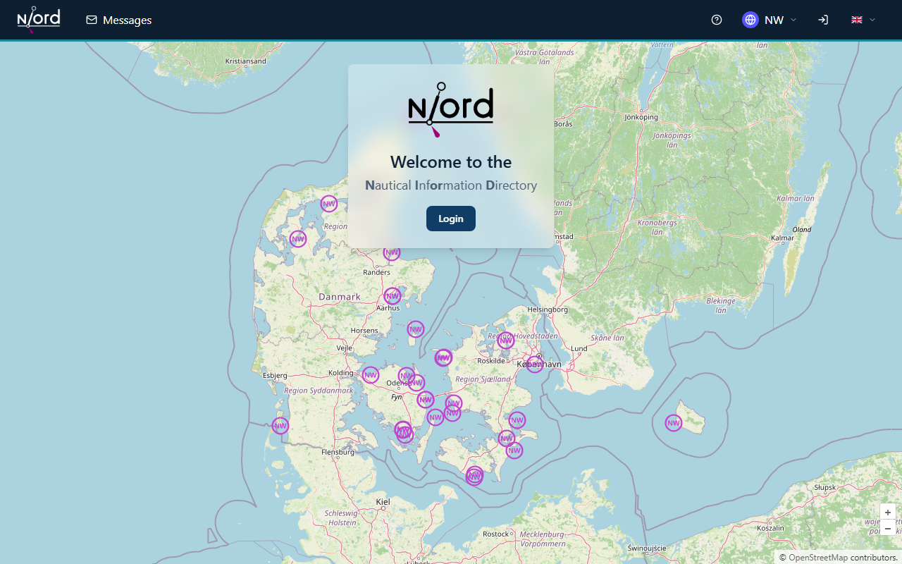
Everyone can open the Home page and the Messages page, also without logging in: you then see the public messages (published, cancelled and expired) and can read them, but you cannot change anything. The pages for editors, administrators and system administrators ask you to log in first.
This chapter describes what every page has in common: the header, the help, logging in and out, and choosing the domain and the language.
3.1. The Header
The header runs across the top of every page. From left to right it holds:
-
The Niord logo, which takes you to the Home page.
-
The menu items Messages, Editor, Schedule, Admin and Sysadmin. Messages is always there. Each of the others appears only when your role in the current domain lets you open the page behind it: Editor for an editor, an administrator or a system administrator, Admin for an administrator or a system administrator, and Sysadmin for a system administrator. Schedule appears to the same roles as Editor, and only in a domain that has a firing schedule.
-
At the right: the help (a question mark), the domain menu (the name of the current domain with a coloured disc), your account menu (a person icon; before you log in, the Login button, an arrow pointing into a door) and the language menu (a flag).
On a narrow window, such as a tablet held upright, the menu items fold into one menu button. It opens a single list with the pages, the help, your account and the languages. The domain menu stays visible beside the button, because it tells you which data you are working on.
A deployment that is not the production system, for example a test system, shows a red badge under the logo, such as TEST, so that nobody mistakes test data for real warnings and notices:
3.2. Help
The question mark in the header, , opens the section of the user guides that describes the page you are on, in a new browser tab. For the Home, Messages and Editor pages that is a section of this manual; the Schedule, Admin and Sysadmin pages open the manuals for administrators and system administrators. A page that no section describes shows no question mark. Many dialogs and panels have a question mark of their own next to their title, which opens the section about that dialog.
The address of the manuals is a setting that a system administrator can change, so a deployment can point the help at its own copy of the manuals.
3.3. Logging In and Out
Before you log in for the first time, ask a Niord administrator for a user account and for the roles you need in each domain. Your roles can differ from one domain to another: you may be an editor in one domain and only able to read in another.
To log in, click Login in the header or in the welcome panel on the Home page. Niord takes you to the login page of its sign-in service. Enter your username and password and click Sign In. Once you are logged in, you come back to the page you were on.
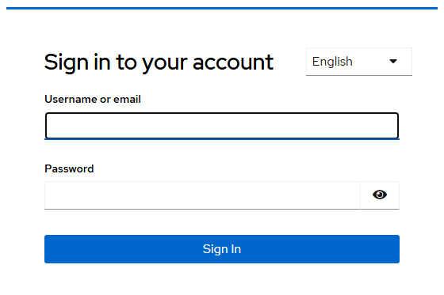
The login page is set up for each deployment. Depending on the set-up, it may also offer your organisation’s own login, or ask for a one-time code after the password.
When you are logged in, the person icon in the header is your account menu. Point at it to see your name. The menu has two items:
-
Edit <your name> opens your account pages in the sign-in service, where you change your password and your profile.
-
Logout logs you out.
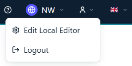
3.3.1. When Your Session Expires
If your session expires, or the sign-in service cannot be reached, Niord does not log you out or reload the page. It carries on as if you had not logged in and shows a strip under the header, Your session has expired — you’re browsing as a guest. or Login is currently unavailable — you’re browsing as a guest., with a Login button:
Click Login to log in again. Logging in or out loads the application afresh: your message selection is emptied, and if the editor holds changes you have not saved, the browser first asks whether you want to leave the page.
3.4. Choosing the Domain
As described in the Editors Manual section, you always work within a current domain in Niord. The current domain is chosen in the domain menu in the header, which shows its name and a disc in the domain’s colour:
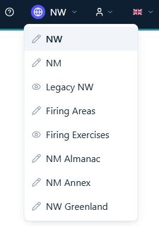
Next to each domain name, a pencil shows that you hold a role in that domain, and an eye that you can only view its published messages. The current domain is shown in bold on a grey background.
Choosing another domain loads the application afresh, at the same address in most cases. Your message selection is emptied. If the editor holds changes you have not saved, the browser first asks whether you want to leave the page, and the changes are lost if you go on, so save your work before you switch.
The browser remembers your choice, so Niord opens in the same domain the next time. A link to Niord
that ends in ?domain= followed by the id of a domain opens Niord in that domain.
3.5. Choosing the Language
The language menu at the right of the header chooses the language of the menus, buttons and labels. The languages it lists are set up for each deployment: the base product comes with English only, and a country adds its own languages. Lists of messages show each message in the chosen language when the message has a text in it.
As with the domain, the browser remembers your choice for the next time.
3.6. When Niord Is Updated
Niord notices by itself when a newer version has been installed while you have it open: when you come back to the browser tab, or when a page you open cannot be loaded any more. It then shows a banner under the header on whatever page you are on, Please refresh web-browser, with a Retry button:
Click Retry in the banner to load the new version. Save your work in the editor first.
After the button, the banner names in small print the Server Version and the Web Version, the versions of the two parts of Niord; the picture leaves them out. Give them when you report a problem.
4. Messages
The Messages page lists the NW and NM messages of the current domain that match your filter, in one of five views. You open it with Messages in the header, which is always there.
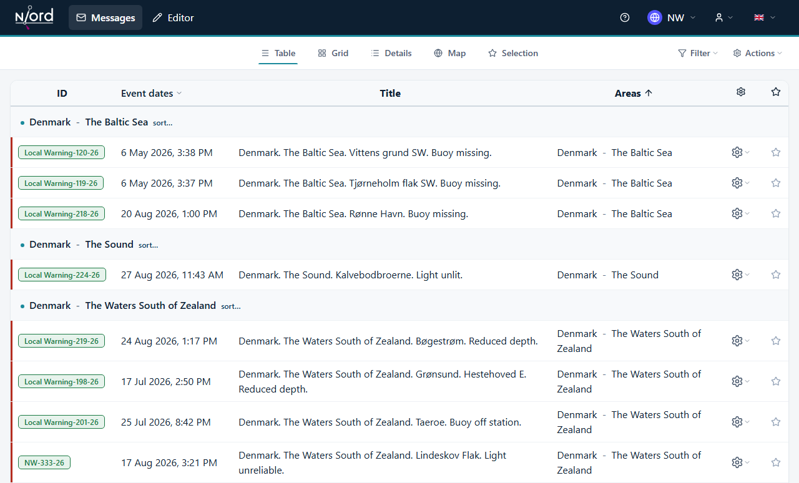
Everyone can open the Messages page, also without logging in. What you see depends on your role:
-
Without logging in, or in a domain where you hold no role, you see only the public messages: those that are Published, Cancelled or Expired.
-
Logged in with a role in the current domain, you can also find the messages in the other statuses, drafts included, with the Status Filter, and you can use the actions for your role.
When you open the page, it lists the published messages of the current domain, sorted the way the domain is set up to sort them, by area unless a system administrator has chosen otherwise.
Under the header, a bar holds the five views in the middle, Table, Grid, Details, Map and Selection, and at its right the Filter menu and the Actions menu. The panels of the filters you use appear above the list.
The address of the page in the browser holds your filter. You can bookmark it, or copy it and send it to someone, and switching between the views keeps the filter. A bookmark with the Domain filter set also changes your current domain; see Domain Filter.
4.1. View Modes
The tabs in the middle of the bar choose how the messages are shown:
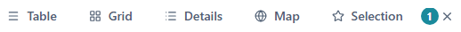
4.1.1. Table View Mode
Table is the view the page opens in. It lists the messages in a compact table (see the example at the start of this chapter), with these columns:
-
ID: the message’s ID, coloured by its status. A message that has no ID yet, such as a draft, shows its type instead, for example Coastal NW.
-
The dates: the event dates of the messages. Click the arrow next to the column’s heading, Select date column, to show the Publish date or the Follow-up date instead. The browser remembers your choice.
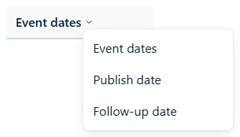
-
Title and Areas.
-
The actions, under a cog: each message’s cog is the menu of actions for that one message (see Message Details).
-
The selection, under a star: each message’s star selects it (see Message Selection). The star in the heading selects every message the list has loaded, or clears the selection when some are selected.
Click the heading ID, the date heading or Areas to sort the list by that column. Click the same heading again to switch between ascending and descending order; an arrow shows the order. The Title column cannot be sorted.
While the list is sorted by area, a heading row names each area, and an editor finds a sort… link next to it (see Sort Area Action).
A red bar along the left edge of a row means that the message needs attention: its follow-up date has passed. Point at the row to read Requires attention (e.g. expired/overdue warning). The bar marks the rows in the Details view too; a selected row shows its selection colour instead.
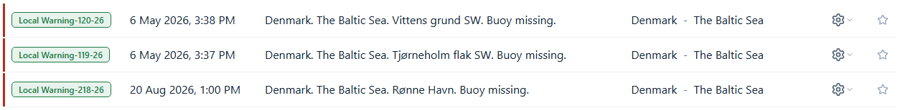
4.1.2. Grid View Mode
In the Grid view, each message is a card with a thumbnail map of the message, its ID, its title and its text. The view helps you recognise a message by its place on the map. Point at a card to see its selection star in the middle, and use the cog in its corner for its actions.
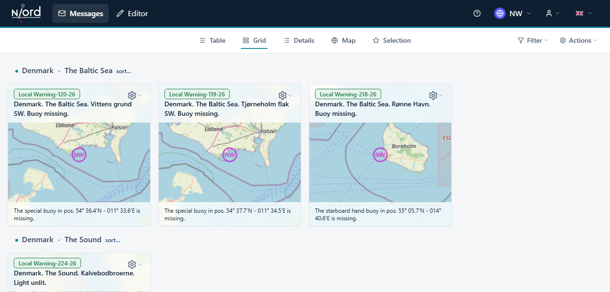
4.1.3. Details View Mode
In the Details view, each message is shown in full, the way it is shown in the Message Details panel, with a thumbnail map at its left and its cog at its right. Point at the thumbnail map to see the message’s selection star. A message marked as original information shows a star above its text.
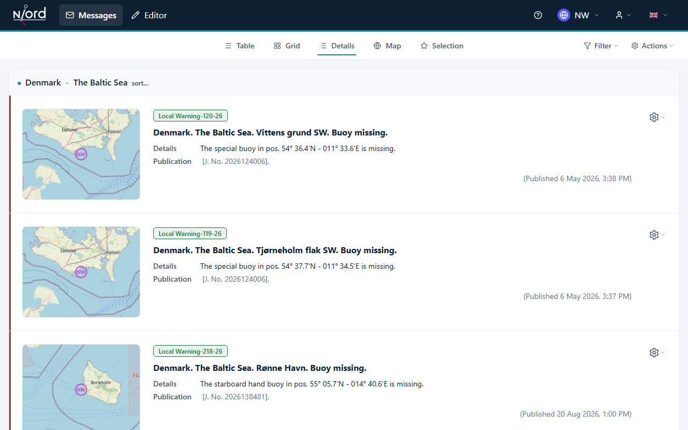
4.1.4. Map View Mode
In the Map view, the messages are drawn on a map that fills the window. The map is a filter of its own: the list holds only the messages within the part of the map you see, and moving or zooming the map searches again. The Map area panel at the top left shows the corners of that part of the map.
Below it, the Search Result panel lists the messages in the map. It is collapsed when you open the view; click the arrow in its heading to expand it. Its heading reads Partial Search Result when the map holds more messages than were loaded. Point at a message in the list to highlight it on the map, and click the magnifying glass next to it to zoom in on it. Messages without a position are listed too, without a magnifying glass.
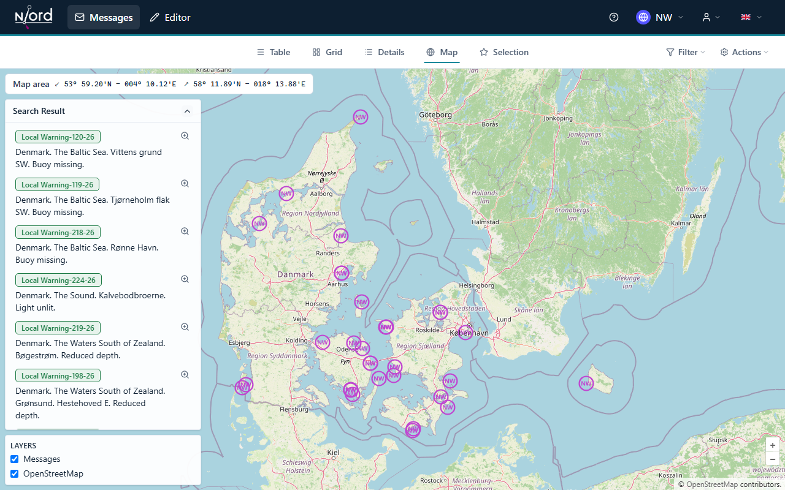
Point at a message on the map to see its title, and click it, on the map or in the list, to open its details. In the Map view a click never selects a message. The Layers panel at the bottom left switches the map’s layers on and off; when you filter on charts or areas, their outlines are layers of their own.
4.1.5. Selection View Mode
The Selection view lists the messages you have selected, in the same way as the Details view. See Message Selection.
4.1.6. Long Lists
A long list is loaded a part at a time: 200 messages at a time, and up to 1000 in the Map view. When more messages match than are shown, a button at the bottom of the list says which ones it will load, for example Load 200 - 400 of 813 messages:
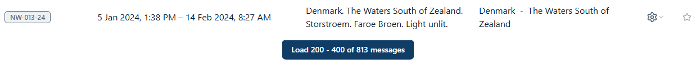
If loading fails, click Retry to try the same part again without losing what is already shown.
4.1.7. Opening a Message
Click a message’s title in the Table view, or the message itself in the other views, to open it in the Message Details panel. The messages are links: a click with the middle mouse button, or with Ctrl held down, opens the message in a new browser tab instead.
If you hold down the E key while you click a message in the Table, Grid, Details or Selection view, the message opens straight in the editor. This works for every message you may open in the editor; any other message opens in the details panel as usual. On some laptop touchpads a tap is ignored while a key is held down; a mouse click always works.
4.2. Message Selection
In every view but the Map view, each message has a star, . Click it to select the message, and click it again to deselect it. In the Table view the star is in the last column; in the Grid, Details and Selection views it shows in the middle of the message’s thumbnail map when you point at it, and stays there while the message is selected. The star in the message details panel does the same.
The selected messages are listed in the Selection view. Its tab shows how many messages are selected, and the cross next to the number clears the selection:
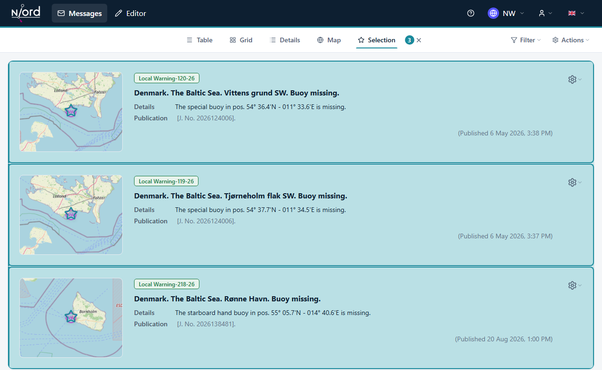
The selection is kept while you filter, search and switch between the views, so you can build it up from several searches. It is emptied when you reload the page, choose another domain, or log in or out. Print, mail or tag the selection before you do any of these.
The selection lets you act on just the messages you choose rather than on everything the filter finds: you can print them, mail them, add them to a tag, compare two of them, export them and change their status. These actions are described in Message Actions.
4.3. Message Filtering
The Filter menu lists the filters. Click a filter to switch it on: its panel appears above the list, where you set its value. The menu stays open, so you can switch on several filters in turn, and a dot marks each filter that is on. The number on the Filter button counts them.
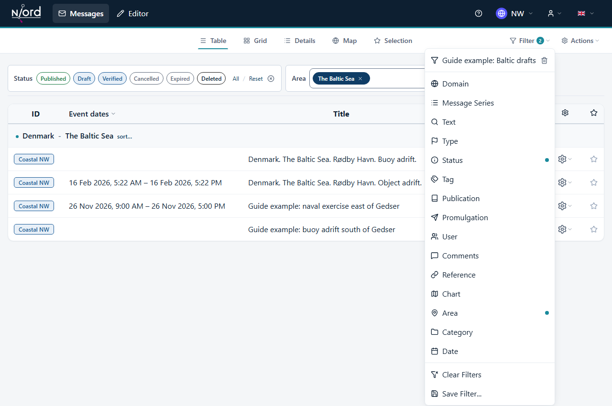
Your saved filters head the menu, such as Guide example: Baltic drafts in the picture (see Save Filter).
The list follows every change at once, and the address of the page in the browser changes with it, so you can bookmark a filter.
To switch a filter off, click the cross at the right of its panel, or click the filter in the menu again. Either way its value is cleared.
The filters are described one by one below.
4.3.1. Domain Filter
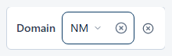
The Domain filter searches the messages of another domain without changing your current domain. This is useful when, for example, you want to base a new Notice to Mariners on a copy of an existing Navigational Warning.
When you search another domain, only its public messages are found: those that are Published, Cancelled or Expired.
Like every filter, the Domain filter is kept in the address of the page, as domain= followed by
the id of the domain. Niord also reads that part of an address when it starts, to choose the
current domain (see Choosing the Domain). So when you open a bookmark or a link that has the
Domain filter set, the filtered domain becomes your current domain, and the filter then searches
your own domain.
4.3.2. Message Series Filter
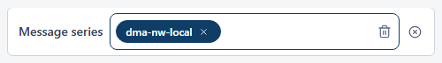
The messages of a domain always belong to one of the domain’s message series, which decide among other things how the messages are numbered. A domain for navigational warnings may, for example, have one series for local warnings and another for coastal warnings.
The Message series filter finds the messages of the series you pick. With the Domain filter on, you pick from the series of that domain.
4.3.3. Text Filter
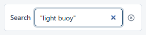
The Text filter, whose panel is labelled Search, finds the messages that contain the words you type in Search terms. It searches all the texts of a message: its ID, title, details and subjects, areas, categories, charts, references, publication and source.
When you are logged in, you can use this syntax:
| Example | Finds |
|---|---|
|
Messages with at least one of the words. |
|
Messages with the words next to each other, in this order. |
|
Messages that contain light and do not contain buoy. |
|
Messages with a word that starts with harb, such as harbour. |
Without logging in, the text is searched as plain words.
A system administrator can switch the text search to the database’s own search (the setting
disableLucene). The text filter then finds the messages that contain all the words you type, also
in other forms of the words (harbour finds harbours), and a * is not understood.
4.3.4. Type Filter
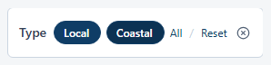
The Type filter finds messages of the types you pick. Click a type to pick it, and click it again to leave it out; All picks every type and Reset none.
For Navigational Warnings the types are Local, Coastal, Sub-area and Navarea; for Notices to Mariners Preliminary, Temporary, Permanent and Misc. The filter offers only the types the domain’s message series use. In a domain with both Navigational Warnings and Notices to Mariners, it also has the choices All, NW and NM.
4.3.5. Status Filter
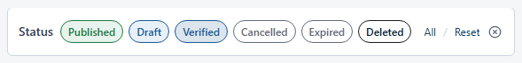
When no status is picked, the page shows the published messages. The Status filter lets you pick any combination of statuses: Published, Draft, Verified, Cancelled, Expired and Deleted. All picks every status and Reset none.
When you are logged in with a role in the current domain, the Tag and Publication filters are an exception: with either of them on and no status picked, the list holds the messages of the tag or the publication in every status, drafts and deleted messages included.
Every status is offered when you are logged in. Without logging in, or with the Domain filter set to another domain, only the public statuses are offered: Published, Cancelled and Expired. In a domain where you hold no role, the other statuses are offered too, but only public messages are found.
4.3.6. Tag Filter
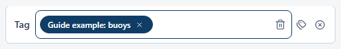
Message tags are named groups of messages; see Message Tags. The Tag filter finds the messages of the tags you pick. Type part of a tag’s name in Search tags and pick the tag, or click , Browse all tags, to choose from a list of the tags (see The Tag Picker).
4.3.7. Publication Filter
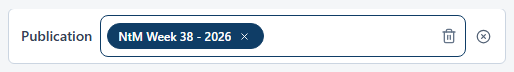
Administrators publish publications made from messages, such as the weekly Notices to Mariners. The Publication filter finds the messages a publication holds. Type part of its title in Search publications and pick it from the list.
If a publication cannot be used as a filter, the panel says so under the field, starting with The publication filter could not be applied.
4.3.8. Promulgation Filter
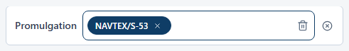
System administrators set up promulgation types, such as NAVTEX, which are the channels a message is sent through; see Promulgation Editor Field. The Promulgation filter finds the messages that use the promulgation types you pick.
4.3.9. User Filter
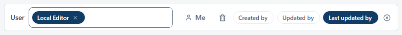
The User filter finds the messages a user has worked on. Pick the user in Search users, or click Me for yourself, and choose how: Created by (the user created the message), Updated by (the user has changed it at some point) or Last updated by (the user made the latest change).
The User filter is offered only when you are logged in.
4.3.10. Comments Filter
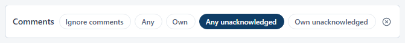
Writing a message often involves several people who write it and read it through. To help them, users can add comments to a message and acknowledge the comments of others; see the editor’s Comments page.
The Comments filter finds messages by their comments: Any (messages with comments), Own (messages you have commented on), Any unacknowledged and Own unacknowledged (messages with comments nobody has acknowledged yet). Ignore comments leaves comments out of the search.
4.3.11. Reference Filter
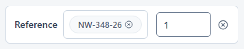
A message may refer to other messages. Each reference has a type that says, for example, that the message cancels the referenced message or repeats it.
The Reference filter finds messages by these references. Start typing in Message ID (at least three characters) and pick the message: the list of suggestions says whether your text matched the message’s database ID, its short ID or its text. That message is the starting point, and the number field next to it says how many levels of references to follow, from 0 to 5. It starts at 1:
-
With 0, only the message itself is found.
-
With 1, the messages that refer to it, or that it refers to, are found as well.
-
With 2, also the messages that refer to those, or that those refer to, and so on.
4.3.12. Chart Filter
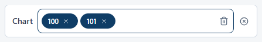
The Chart filter finds the messages that concern any of the sea charts you pick in Search charts. In the Map view, the charts' outlines are shown on the map.
4.3.13. Area Filter
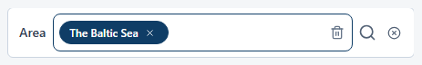
Administrators keep the areas in a tree, from countries down to waters and places. The Area filter finds the messages of the areas you pick, including those of their sub-areas. Type part of an area’s name in Search areas, or click the magnifying glass, Browse area tree, to pick areas in the tree. In the Map view, the areas' outlines are shown on the map.
4.3.14. Category Filter
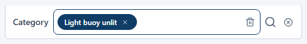
Categories, such as Light or Light buoy, are also kept in a tree by administrators. The Category filter finds the messages of the categories you pick, including those of their sub-categories. Type in Search categories, or click Browse category tree.
4.3.15. Date Filter
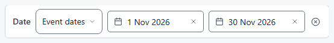
The Date filter finds messages by a date. Choose which date in the list at the left, and set From, To or both:
| Date | Finds the messages |
|---|---|
Publish date |
whose publishing period overlaps the dates. |
Publish from date |
that were published, or are to be published, between the dates. |
Event dates |
whose event dates overlap the dates. |
Created date |
that were created between the dates. |
Updated date |
that were last changed between the dates. |
4.3.16. Clear Filters
Clear Filters at the bottom of the Filter menu switches every filter off.
4.3.17. Save Filter
Save Filter… at the bottom of the Filter menu saves the filters you have set, so you can use them again. Give the filter a name in the Save filter dialog and click Save.
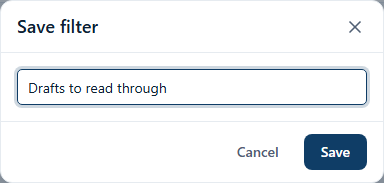
Your saved filters are listed at the top of the Filter menu. Click one to set its filters again, or click the bin next to it to delete it. Saved filters are yours: nobody else sees them.
Without logging in, Clear Filters and Save Filter… are greyed out and cannot be used.
4.4. Message Actions
The Actions menu at the right of the bar lists what you can do with the messages the filter has found, or with the messages you have selected.
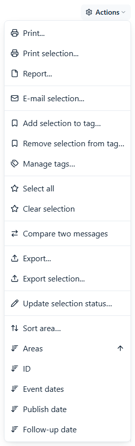
Which actions the menu holds depends on your role and on whether you have selected messages:
-
Everyone can print the list, select all messages, compare two selected messages and sort the list.
-
When you are logged in, you can also print and mail the selection, run a report, tag messages, manage tags, and export.
-
Editors can also change the status of the selected messages and sort the messages of an area.
-
Administrators can also import messages.
The actions are described one by one below.
4.4.1. Print Action
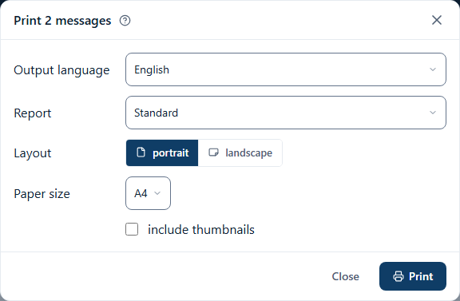
Print… prints the messages the filter has found, as a PDF. The print dialog, Print 2 messages for two messages, has these settings:
-
Output language: the language the messages are printed in.
-
Report: the layout of the PDF. The reports are set up per domain by a system administrator. Usually there is a Standard report, which prints the details of the messages, and a Draft report, which prints every language of the messages with more of their fields, useful for reading messages through. A domain for Notices to Mariners often has more reports, for example for the weekly Notices to Mariners.
-
Layout (portrait or landscape) and Paper size.
-
include thumbnails, a thumbnail map beside each message. It is offered only when the report leaves the choice to you.
-
Some reports have settings of their own, listed below the others by name.
Click Print to make the PDF; the browser opens it. The browser remembers the layout, the paper size and the thumbnails for the next time; the report and its settings start afresh each time.
4.4.2. Print Selection Action
Print selection… works like the Print Action, but prints only the messages you have selected.
4.4.3. Report Action
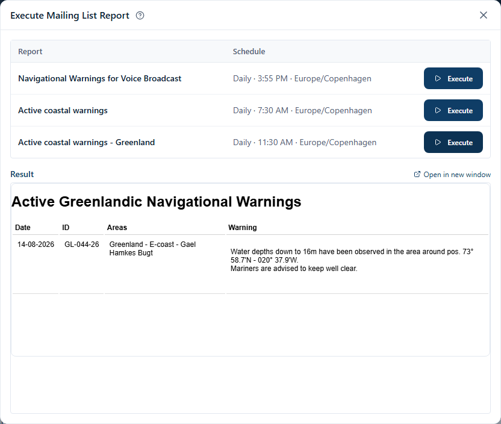
Niord can send reports to the recipients of a mailing list on a schedule; see the Mailing Lists chapter. Sometimes you need such a report outside its schedule.
Report… opens the dialog Execute Mailing List Report, which lists the reports that may be run on demand, with their schedules. Click Execute next to a report to see its result below the list. To print the result, or keep it open, click Open in new window.
4.4.4. E-mail Selection Action
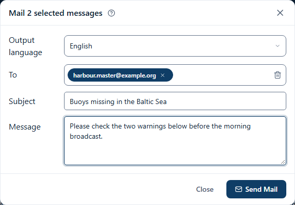
E-mail selection… mails the messages you have selected. The dialog Mail 2 selected messages asks for:
-
Output language: the language of the messages in the mail.
-
To: the recipients. Type in Select e-mail addresses and pick from the list: part of a name finds Niord’s users with that name, and a whole e-mail address is offered as it is, so you can also mail someone who is not a user of Niord.
-
Subject, which is required, and an optional Message to the recipients.
Click Send Mail to send a mail with the details of the selected messages. This can be useful when, for example, you follow up on the work a Notice to Mariners describes.
4.4.5. Add Selection to Tag Action
Add selection to tag… opens the tag picker (see The Tag Picker), where you tick the tags the selected messages should be added to.
4.4.6. Remove Selection from Tag Action
Remove selection from tag… opens the tag picker with only the tags the selected messages are in. Untick a tag to take the messages out of it.
4.4.7. Manage Tags Action
Manage tags… opens the tag manager, where you create, change and delete tags. See The Tag Manager.
4.4.8. Select All Action
Select all selects every message the list has loaded. In a long list, that may be fewer than the filter has found (see Long Lists). See Message Selection.
4.4.9. Clear Selection Action
Clear selection empties the selection. See Message Selection.
4.4.10. Compare Action
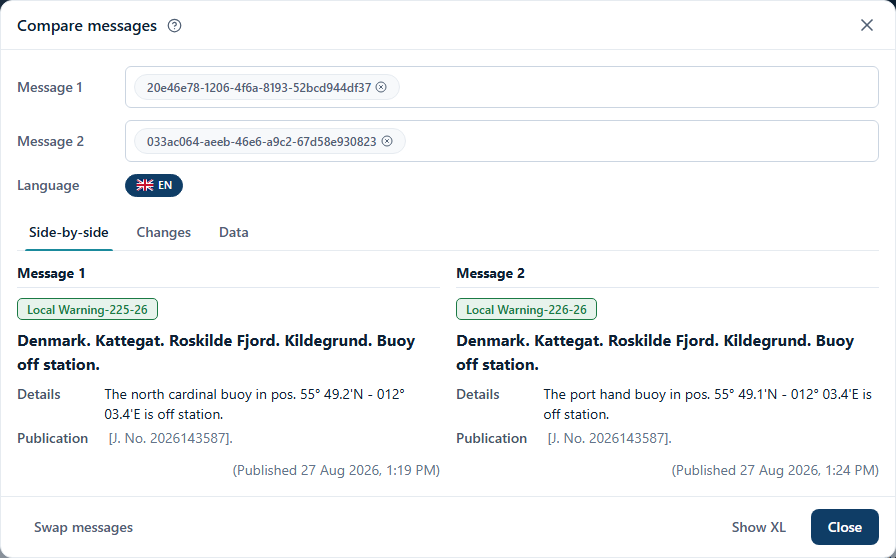
Compare two messages is offered when you have selected exactly two messages. It opens the dialog Compare messages on its Side-by-side tab, which shows the two messages next to each other, each the way the details panel shows it.
Message 1 and Message 2 name the two messages. When the dialog opens from your selection, they show the messages' database IDs, the long codes of letters and digits that Niord gives every message. To compare another message, clear a field with the cross on its chip, type at least three characters of the message’s short ID, such as NW-348, and pick the message from the list. Deleted messages can be picked too. Swap messages changes their places, Language chooses which language to compare, and Show XL makes the dialog larger.
The Changes tab shows the text of the two messages as one, with the words of message 2 that message 1 does not have marked as Additions and the words of message 1 that message 2 does not have as Deletions:
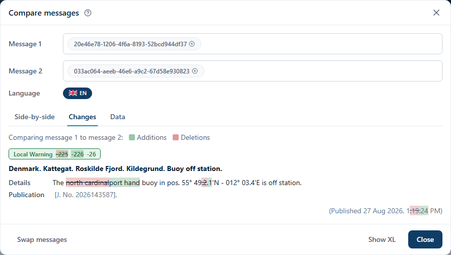
The Data tab compares the data of the two messages, field by field, and marks what was changed, added and removed. Click the name of a group of fields to fold or unfold it; in the picture, areas and categories are folded. The tab is meant for advanced users:
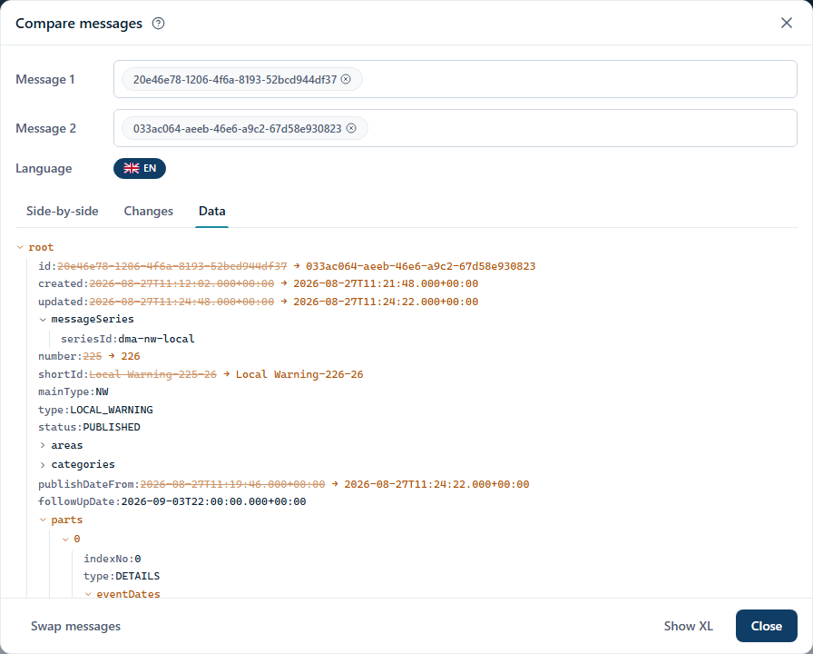
4.4.11. Export Action
Export… downloads the messages the filter has found as a zip archive. The archive holds the messages, a page that shows them, and the files attached to them, such as the pictures of a Notice to Mariners. It can be read back into Niord with the Import Action.
4.4.12. Export Selection Action
Export selection… works like the Export Action, but exports only the messages you have selected.
4.4.13. Import Action
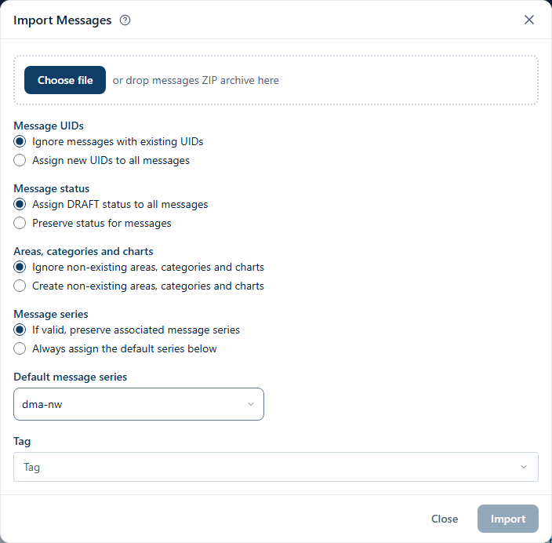
Import… is offered to administrators only, because it can change many messages at once. It reads a zip archive made by the Export Action. Click Choose file, or drop the archive on the dialog, and choose how to import it:
| Setting | Choices |
|---|---|
Message UIDs |
Ignore messages with existing UIDs leaves out each message whose unique id is already in Niord; Assign new UIDs to all messages imports every message as a new one. |
Message status |
Assign DRAFT status to all messages, or Preserve status for messages. |
Areas, categories and charts |
When a message names an area, a category or a chart that Niord does not have: Ignore non-existing areas, categories and charts, or Create non-existing areas, categories and charts. |
Message series |
If valid, preserve associated message series keeps a message’s series when it belongs to the current domain; Always assign the default series below puts every message in the Default message series. |
Tag |
When you pick a tag, every imported message is added to it. |
Click Import to start. The import runs as a batch job in the background: the dialog shows the answer under Result, with a View batch job link to follow the job. The link opens the batch job page of Sysadmin, so it works for system administrators only; anyone else is told Access denied. and taken to the Home page. The list of messages is not updated by itself; search again when the job has finished.
4.4.14. Update Selection Status Action
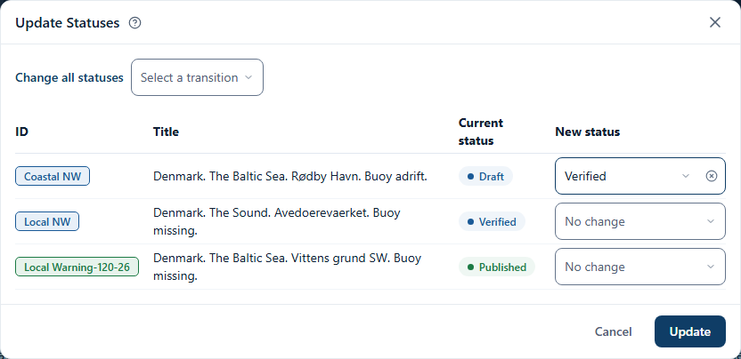
Update selection status… is offered to editors when messages are selected. It changes the status of many messages at once, which you otherwise do one message at a time on the editor’s Status page.
The dialog Update Statuses lists the selected messages whose status can change, with their Current status. For each, pick the New status among the changes its status allows:
-
a Draft can become Verified or Deleted;
-
a Verified message can become Published, Draft or Deleted;
-
a Published message can become Cancelled.
Cancelled, Expired and Deleted messages cannot change status and are left out. To make the same change for every message it fits, pick it in Change all statuses, for example Draft → Verified. Click Update and confirm to change the statuses.
4.4.15. Sort Area Action
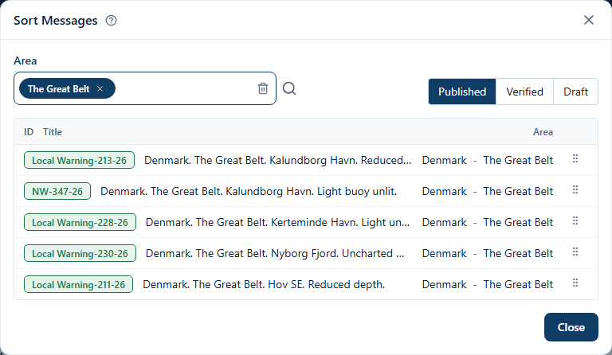
Sort area…, offered to editors, sets the order of the messages within an area, which is the order they are listed and printed in when sorted by area.
In the dialog Sort Messages, pick the Area and the status of the messages to sort, Published, Verified or Draft. The messages are listed in their current order. Drag a message by its handle, , to its place. Each move is saved at once. Click Close when you are done; the list of messages is then updated.
You can also click sort… next to an area’s heading in the list, which is shown while the list is sorted by area:
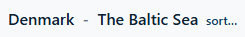
The dialog then lists the messages under that heading, whatever their status.
By default, the messages of an area follow the order of the area tree, which administrators keep:
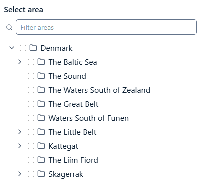
In this example, The Baltic Sea comes before The Sound, and so on.
An administrator can also give an area a Message sorting, so that its messages, and those of its sub-areas, are sorted by their position: for example North-South, or Clockwise around a point. The Sort area… action then lets you adjust that order by hand.
4.4.16. Sorting the List
The last items of the Actions menu sort the list: Areas, ID, Event dates, Publish date and Follow-up date. Choosing the field the list is already sorted by switches between ascending and descending order. An arrow next to the field shows the current order.
4.5. Message Details
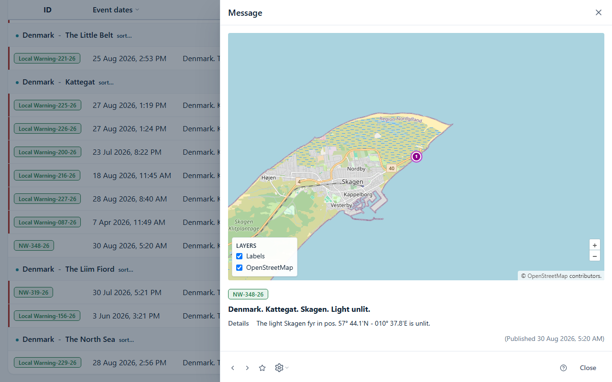
The Message panel opens on the right of the page when you open a message from a list (see Opening a Message). The address of the page then names the message, so you can copy it and send it to someone.
At the top, a map shows the message’s positions and areas, with the Layers panel to switch its labels on and off. The map is left out when the message has no position, or when a picture attached to the message is shown above it. Below the map, the message is shown in full, with its promulgation when it has any.
At the bottom of the panel:
-
The arrows show the previous and the next message of the list. When you click a referenced message in the text, the panel shows that message instead, and a Back arrow takes you back.
-
The star selects or deselects the message.
-
The cog, Message actions, is the menu for this one message:
-
Edit opens the message in the editor. It is offered when you are logged in and the message belongs to the current domain; a user who is not an editor can read the message there and comment on it.
-
Copy, for editors, starts a new message in the editor as a copy of this one, once you confirm with Copy Message in the dialog Copy Message?. For a Notice to Mariners, the dialog also offers Include reference to copied message.
-
Print prints this message, with the same dialog as the Print Action. It is offered to everyone.
-
Add to tag… opens the tag picker for this message. Add to followed by a tag’s name adds the message to the tag you used last, in one click. Remove from… lists the tags the message is in, to take it out of one. These items are offered when you are logged in.
-
-
The question mark opens this section of the manual, and Close closes the panel.
The cog’s menu, here for a message that is in a tag, with no tag used yet:
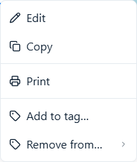
The same cog is in the Actions column of the Table view and on every message in the Grid, Details and Selection views.
4.6. Message Tags
Message tags are named groups of messages, for example the messages a colleague should read through, or the messages of a project. They are used in the Tag Filter, in the Import Action, and by the actions that add messages to tags and remove them.
A tag is one of three kinds:
-
A private tag is yours: only you see it and use it.
-
A domain tag belongs to a domain and is shared by everyone who works in that domain.
-
A public tag is shared by every domain.
A tag can have an expiry date; within an hour after it, Niord deletes the tag, but not its messages. A tag can also be locked: no messages can be added to a locked tag or removed from it, and only an administrator can unlock it.
4.6.1. The Tag Picker
The tag picker opens where you click: from Add selection to tag… and Remove selection from tag… in the Actions menu, from Add to tag… in a message’s cog, and from Browse all tags in the Tag filter, where its title is Filter by tag.
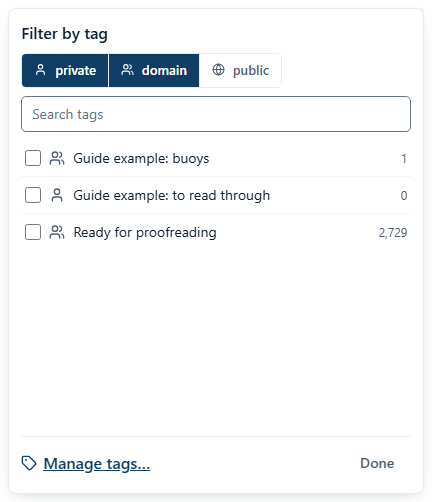
The chips at the top, private, domain and public, show only the tags of those kinds; with no chip chosen, every kind is shown. In the picture, private and domain are chosen. Search tags finds a tag by its name. Each tag shows how many messages it holds.
When you add messages to tags, a tick shows that all the messages are in the tag, and a dash that some of them are. Ticking or unticking a tag adds the messages to it, or takes them out, at once. Locked tags are not listed then, since they cannot change. In the Tag filter, ticking a tag filters the list by it instead, and locked tags, marked with a lock, are listed too. Manage tags… at the bottom opens the tag manager, and Done closes the picker.
4.6.2. The Tag Manager
Manage tags… in the Actions menu, or in the tag picker, opens the Message Tags panel, where you create, change and delete tags.
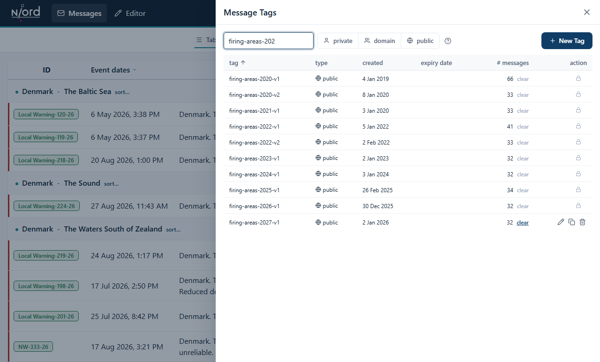
The panel lists the tags you can see, with their type, the date they were created, their expiry date and the number of messages they hold. Click a column heading to sort by it. Name and the chips private, domain and public narrow the list.
-
New Tag adds a row at the top of the list. Type the Tag Name, choose who shares it (private, domain or public), set an Expiry Date if the tag should be deleted by itself, tick Locked if its messages should not change, and click the tick to save it.
-
Edit tag (the pencil) changes the tag’s sharing, expiry date and lock. A tag’s name cannot be changed once it is created.
-
Copy tag adds a new row filled in from the tag, without its lock, for you to name and save.
-
Delete tag (the bin) deletes the tag after you confirm. Its messages are not deleted.
-
clear, next to the number of messages, empties the tag without deleting it.
A locked tag shows a lock instead of these actions. An administrator can click the lock, Unlock tag, to unlock it.
5. Editor
The Editor is where you write a message: you create a new navigational warning (NW) or notice to mariners (NM), fill in its fields, and move it through its life from draft to published. It is also where you and your colleagues comment on a message and look up how it has changed.
You open the editor in two ways:
-
Click Editor in the main menu. This opens the start screen, where you create a message. The menu item is shown to users with the editor role.
-
Open a message from the Messages page: choose Edit in the message’s actions menu or in its details (see Messages). This opens the message on the editor’s Edit tab.
A user without the editor role can still open a message in the editor from the Messages page, or by a link to it. The message’s fields are then shown but cannot be changed, and the status actions are not offered; such a user can read and write comments.
Across the top, the editor has four tabs, each a page of its own for the open message:
| Tab | What it is for |
|---|---|
Edit |
The message’s fields, with a live preview beside them. See The Edit Page. |
Status |
The message as it will be shown, and the buttons that move it from draft to published, cancel it or copy it. See The Status Page. |
Comments |
The comments written on the message. The badge on the tab counts them. See The Comments Page. |
History |
Every saved version of the message, and what changed between two of them. See The History Page. |
A message that has never been saved has only the Edit tab. The Actions menu at the right end of the tabs is described in Editor Actions.
A message belongs to the domain it was made in. Switching to another domain in the header reloads the page. If the message has unsaved changes, the browser first asks whether you want to leave the page; if you leave, the changes are lost.
5.1. Create a Message
When you click Editor in the main menu, the start screen Create a message opens.
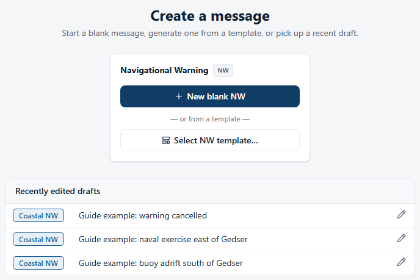
It has one card for each kind of message you may create in the current domain: Navigational Warning (NW) and Notice to Mariners (NM). Which kinds a domain has is set up by a system administrator, so you may see one card or two.
-
New blank NW (or New blank NM) opens the Edit tab with an empty message of that kind.
-
Select NW template… (or Select NM template…) lets you search the domain’s message templates and fill one in, which writes the message for you. A navigational warning in particular often follows a strict template, so that it meets the standards for maritime safety information and NAVTEX. Templates are described in Message Template Execution. The button is shown only when the domain has templates.
Below the cards, Recently edited drafts lists the drafts and verified messages of this domain that you have saved in the last month, at most 20, as in the picture above. Click a title to read the message, or the pencil to open it in the editor. The list is left out when there are none.
A new message is not saved until you click Save. Until then it has only the Edit tab.
5.2. The Edit Page
The Edit tab is where you write the message. It opens when you create a message, and when you open an existing message in the editor.
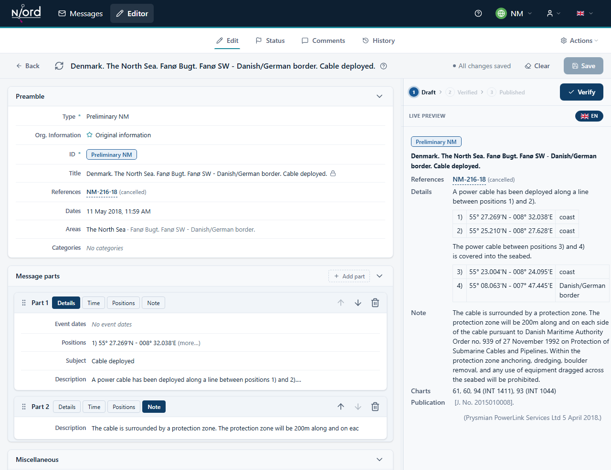
The page has three parts:
-
the header, with the message’s title and the buttons that save it or set it aside (The Header);
-
on the left, the message’s fields, grouped in the panels Preamble, Message parts and Miscellaneous (Fields);
-
on the right, the live preview of the message with its status above it (Live Preview and Status).
A message you may not change, such as a published message when you are not an administrator, is shown on the Edit tab as the reader will see it, without its fields.
5.2.1. The Header
The header is on all four tabs, so you can save from any of them.
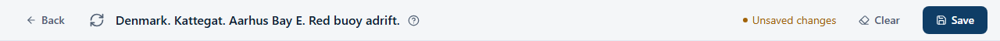
From left to right:
| Control | What it does |
|---|---|
Back |
Returns to the Messages page as you left it: the same view, filter and sorting. |
Reload message (the circular arrows) |
Reads the message again from the server and throws away your changes. If you have unsaved changes, you are asked first: "Discard unsaved changes and reload?". Shown only for a message that has been saved. |
The title |
The message’s title in the language you use Niord in, or "Untitled message". The question mark beside it opens this manual: on the Edit tab at the start of this chapter, on the other tabs at the section that describes the tab. |
All changes saved / Unsaved changes |
Whether the message has changes you have not saved. If you change a field back to what it was, the message counts as unchanged again (but see the status buttons). |
Clear |
Closes the message and returns to the start screen. If you have unsaved changes, you are asked first. |
Save |
Saves the message. It is enabled when there are unsaved changes. See Saving, Clearing and Leaving. |
On the Edit tab, when the browser window is 1080 pixels wide or narrower, the header also has a Preview button, which opens the live preview in a panel from the right.
5.2.2. Live Preview and Status
To the right of the fields, the Live preview shows the message as it will be printed and shown to readers, and it changes as you type. The language buttons above it (such as EN) choose which language version it shows. Click a part of the preview, such as its references or its details, to open the matching field on the left.
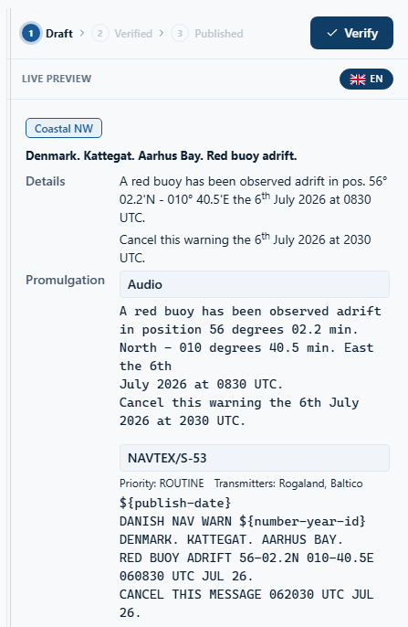
You can make the preview wider or narrower by dragging its left edge. In a window 1080 pixels wide or narrower it is not beside the fields but opens with the Preview button in the header.
Above the preview, the status steps show where the message is in its life: Draft, Verified and Published, followed by Expired or Cancelled once it has left the published state. The current step is in bold, and the steps already passed have a check mark. To the right is the next step you can take: Verify for a draft, Publish for a verified message, or the date a verified message will be published on by itself; these are shown to editors only. On a verified message, the Draft step is a button, Revert to draft, that returns the message to draft after asking you. Only a user with the editor role can revert a message: for other users the step is a button too, but Niord refuses the change ("Could not revert to draft").
The buttons are disabled as soon as you change the message, and stay disabled until the message is saved or reloaded. Changing a field back to what it was is not enough: the header then says All changes saved and Save is disabled, but these buttons stay disabled. Click Reload message (the circular arrows in the header) to enable them again. The statuses are described in The Status Page.
5.2.3. Fields
Each field of the message is a row: its name on the left, its value to the right in the language you use Niord in. A field with no value says so in grey, such as "No references". An asterisk marks a field the message must have before it can be saved. A dot before the name marks a field you have changed since the message was opened.
Click a row to open it. An open row says "editing…" and shows the field’s editor below it; click the row again to close it. You can also work with the keyboard: with a row selected, the right arrow opens it, the left arrow closes it, Space or Enter opens or closes it, and the up and down arrows move to the previous or next row. Tab and Shift+Tab move between the inputs of an open row. Expand all fields and Collapse all fields in the Actions menu open or close every row.
The fields are grouped in three panels, each of which you can fold away with the arrow in its corner:
-
Preamble: the fields of the message as a whole, from its type to its categories.
-
Message parts: the parts of the message, each with its own time, place and text (Message Parts).
-
Miscellaneous: promulgation, charts, attachments, publications, sources and layout.
Where a field has one input per language, such as the title, each input is marked with the flag of its language. Niord shows one input for each language the deployment writes messages in.
5.2.4. Optional Fields
Not every field is shown for every message. Type, ID, Title, Dates, Areas and Categories are always shown. The others are shown or left out according to how a system administrator has set up the domain: a general set of fields, one set for NWs and one for NMs, and fields switched on or off by the message’s areas, categories and message series. A message in a firing area, for example, also offers the part types Prohibition and Signals. The fields that are shown can change while you work, for example when you choose another area. References and Charts are always shown on a message that has references or charts, and Event dates on a part that has them.
To use a field that is not shown, click Manage optional fields… below the panels. The menu lists the fields the domain’s set-up leaves out; a dot marks the ones you have added (Layout in the picture). Choose a field to show it, and choose it again to hide it. The menu stays open, so you can choose several. Your choice lasts while the message is open: when you open it again, the fields follow the domain’s set-up again.
Most entries are fields. Three of them are part types instead (Message Parts): Prohibition and Signals add a button for that part type to the head of each part, and Part Types adds the buttons Details, Time, Positions and Note.
The menu is shown to editors only, and only when there is a field to add.
5.2.5. Saving, Clearing and Leaving
Click Save in the header to save the message. Before it saves, Niord checks that the message has a type and a message series, and that the publish-from date is not after the publish-to date. If something is missing, a message says what, such as "Please specify the message series", and nothing is saved.
-
Saving a Verified message makes it a Draft again, because it must be verified anew. Niord asks you first: "Saving a verified message reverts it to Draft. Continue?".
-
The first time a message is saved, the Status, Comments and History tabs appear, as do the Reload button and the print, compare and tag actions of the Actions menu.
-
Saving from the Status, Comments or History tab keeps you on that tab.
Your changes are kept when you switch between the four tabs. If you leave the editor, or open another message in it, while there are unsaved changes, Niord asks whether to leave without saving. Closing the browser tab asks too.
If two editors change the same message at the same time, the one who saves last wins: the earlier save is overwritten without a warning. Agree with your colleagues who works on a message, or use comments.
5.2.6. Org. Information Field
The Org. Information field says whether the message is based on original information. Click Mark as original information to set or clear the mark. A message with the mark shows a star and "Original information" in the closed field, and a star in the message lists. The field is usually shown for notices to mariners only.
5.2.7. Type Field
The Type field says what kind of NW or NM the message is. Click one of the buttons to choose it.
-
For navigational warnings the types are Local, Coastal, Sub-area and Navarea.
-
For notices to mariners the types are Temporary, Preliminary, Permanent and Misc (miscellaneous).
Only the types the domain’s message series allow are offered. When exactly one message series allows the type you choose, that series is chosen for you in the ID field. Changing the type also prepares the message’s promulgations anew, so changes you made in the Promulgation field are lost.
5.2.8. ID Field
Every message belongs to a message series. A system administrator sets up the series of each domain (see Message Series); the series decides how the message’s ID, its short ID such as "NM-216-18", is made, and how it is numbered. There are four numbering schemes:
| Numbering | What happens |
|---|---|
Yearly |
The message gets the next number of the series when it is published. The numbers start again at 1 every year. |
Continuous |
The message gets the next number of the series when it is published. The numbers never start again. |
Manual |
You give the message its number, or its whole ID, yourself in the ID field. |
None |
The message gets no number and no ID. |
In the open ID field:
-
Message series lists the domain’s series for this kind of message. Often there is only one, and it is already chosen.
-
UID is the message’s unique system ID, given when the message is created. You can use it to find a message before it has a short ID.
-
Number is shown for a series with manual numbering: type the number, and the ID is made from it.
-
ID shows the short ID. For a series with manual numbering and no fixed format, you type the whole ID here instead. For a series without numbering, it is left out.
Until a message is published, its ID shows the message’s type, such as "Preliminary NM".
5.2.9. Title Field
The Title field holds the message’s title in each language.
When Auto-generate title is ticked, as it is by default, Niord writes the title for you from the message’s area (with the areas above it), its vicinity and the subjects of its parts, and the title inputs cannot be changed; a lock beside the title in the closed row shows this. Untick it to write the title yourself.
5.2.10. References Field
The References field links the message to other messages. Notices to mariners use it the most, for example to cancel an earlier notice, but a navigational warning can use it too.
Click Add reference to add a row. In each row:
-
Message ID: the short ID or the UID of the other message. As you type, matching messages are suggested; you can also type an ID that is not suggested.
-
The type of the reference: (reference), (repetition), (repetition with new time), (cancelled) or (updated repetition). It says how the two messages relate.
-
Description: an optional text in each language.
Drag a row by its handle to change the order, and click the bin to remove it. In the closed row, click a reference to read the message it points to. Readers of the message see the references as links.
When you publish a message whose references cancel, repeat or update other messages, Niord offers to cancel those messages (Publishing a Message).
5.2.11. Dates Field
The Dates field holds the dates that rule when the message is in force:
-
Publish from: when the message is published. A Verified message with a publish-from date is published by Niord at that time; see Publishing a Message.
-
Publish to: when the message ends. A Published message is expired by Niord at that time.
-
Follow-up date: a date by which someone should look at the message again. You can show the follow-up dates in the Messages list, which marks a message whose follow-up date has passed (see Messages).
The publish-from date can be changed only while the message is a draft or verified. The publish-to and follow-up dates can still be changed on a published message, by a user who may edit published messages.
5.2.12. Areas Field
The Areas field places the message in one or more areas. Administrators keep the areas in a tree (see Areas): the firing area "EK D 371 Marstal Bugt", for example, lies in "The Baltic Sea", which lies in "Denmark". Type in the field to search the areas, or click the magnifier to pick from the tree. The title of the message names the area together with the areas above it.
Below the areas:
-
Copy locations copies the positions of the chosen areas, with their names, into the first part of the message (Positions Field). It is enabled when an area is chosen.
-
Compute from locations chooses the areas from the message’s positions. It is enabled when the message has positions.
-
Vicinity: the inputs below the buttons, one per language with its flag, for the precise place, such as the name of a harbour. It is part of the title.
5.2.13. Categories Field
The Categories field gives the message one or more categories, such as "Light unlit". System administrators keep the categories in a tree (see Categories). Type to search, or click the magnifier to pick from the tree.
Some categories are message templates. When the message has one, Run template… opens the template with the message filled in, so you can let the template write the message again; see Message Template Execution.
5.2.14. Message Parts
A message has the fields of the preamble and one or more parts. Each part describes a hazard: when it is, where it is and what it is. Notices to mariners often have several parts; a navigational warning usually has one.
Each part is a card with a head:
-
Drag the handle at the left to move the part, or use the up and down arrows.
-
The buttons after Part 1 choose the part’s type. A domain may leave the buttons Details, Time, Positions and Note out, as the base product does for navigational warnings; then a new part is a Details part. To show them, choose Part Types in Manage optional fields… (Optional Fields).
-
The bin removes the part. A message always keeps at least one part: removing the last one leaves an empty part.
Add part, in the head of the Message parts panel, adds a part at the end.
The part’s type decides which fields the part has, and gives the part its heading when the message is shown:
| Part type | Fields |
|---|---|
Details |
Event dates, positions, subject and description. |
Time |
Event dates and description. |
Positions |
Positions and description. |
Prohibition |
Description. |
Signals |
Positions and description. |
Note |
Description. |
Event dates are shown only when the domain uses them or you add them with Manage optional fields…; a part that already has event dates or positions always shows them. Prohibition and Signals are offered when the message lies in a firing area or when you add them as optional fields. The example below has a Details part and a Note part.
5.2.15. Event Dates Field
The Event dates field gives a part the times of the hazard it describes, such as a firing exercise next week. The publish dates say when the message is in force; the event dates say when the hazard is there. Software that plans routes can use them.
Each row is one time interval:
-
All day: tick it to give dates without a time. An all-day interval covers whole days in the domain’s time zone.
-
From and To: the start and the end.
-
The buttons at the end of the row: Duplicate adds a copy of the interval, Duplicate (next day) adds a copy one day later, and the bin removes the interval.
Click Add date to add an interval.
For navigational warnings the event dates are usually the publish dates, so the field is often not shown for them; add it with Manage optional fields… when you need it. If no part of a message has event dates when it is published, Niord gives every Details part an interval that starts at the publish date and has no end. When the message is cancelled or expires, an interval without an end is ended at the publish-to date, or removed if it starts after that date.
5.2.16. Positions Field
The Positions field gives a part its positions: points, lines and areas on the map. The open field shows them on a small map and lists the positions with their names.
-
Edit positions opens the position editor, where you draw on the map.
-
Edit as text opens the positions as text, to type or paste them.
Both are described in Position Editor.
5.2.17. Subject Field
The Subject field gives a details part a short title in each language, such as "Cable deployed". An auto-generated title is made from the area, the vicinity and the subjects of all parts.
Hide subject decides whether the subject is shown as a heading of the part when the message is shown. A message with one part already has the subject in its title, so the first part of a new message has Hide subject ticked. With several parts, the subjects help the reader tell them apart; in the example below each part is headed by its subject.
5.2.18. Description Field
The Description field holds the text of a part in each language. Every part has one. The editor is a text editor with a toolbar, like a word processor:
| Tool | What it does |
|---|---|
Paragraph style (Normal) |
Normal text or a heading. |
Bold, Italic |
Bold or italic text. |
Text colour, Highlight |
The colour of the text, or of its background. |
Align left, Align centre, Align right, Justify |
The alignment of a paragraph. |
Bullet list, Numbered list |
A list. |
Decrease indent, Increase indent |
Moves a paragraph or list item in or out. |
Insert or edit link |
A link; see Insert or Edit Link and Insert Image. |
Insert image |
An image from the message’s attachments; see Insert or Edit Link and Insert Image. |
Insert table |
A table; see Table. |
No-wrap text |
Keeps the selected text on one line. |
Edit HTML source |
Shows the text as HTML, to change it there. Format HTML source then tidies it. |
Fullscreen |
See Fullscreen. |
Insert locations |
The positions of the part as text; see Insert Locations. |
Insert time |
The event dates of the part as text; see Insert Time. |
Fullscreen
Fullscreen lets the editor fill the window, which is easier for a long text. Click Exit fullscreen to return.
Insert or Edit Link and Insert Image
Links and images work together with the message’s attachments (Attachments Field). If you attach a PDF or a photo to the message, you can link to the file in the text, or show the image in it.
Insert or edit link opens the Insert / edit link dialog for the selected text, or for the link the cursor is in.
Fill in the URL, the Text to display and, if you like, a Title shown when the reader points at the link, and choose whether the link opens in the Same window or a New window. Save inserts the link; Remove link removes a link the cursor is in.
Insert image opens Select an image, which lists the message’s attachments that are images. Click one to insert it at the cursor. A message without attachments says "This message has no attachments".
Table
Insert table adds a table at the cursor. When the cursor is in a table, more tools appear in the toolbar:
-
three lists that set the table’s appearance:
-
Table style: Default table, No border, Condensed, No border, condensed, Positions or Position table;
-
Cell style: Default cell, Underline, Position column or Position index, for the current or the selected cells;
-
Row style: Default row or Underline, for the current or the selected rows;
-
-
buttons to insert a column before or after, delete the column, insert a row above or below, delete the row, and delete the table.
The position styles make a list of positions line up, as Niord’s own position tables do.
Insert Locations
Insert locations writes the positions of the part (Positions Field) into the text, in the language of the description you are in. It opens the Format Message Locations dialog:
-
Message Part: which part’s positions to use, when the message has several parts.
-
Features: the points, lines and areas of the part, each with its positions; tick the ones to insert, or use all and none. The map shows them. Only the positions that make sense in a text are listed: for an area with a hole, only its outer edge. An affected area drawn around a position is left out.
-
Layout: List (numbered), List (bullet), Table, From-to Table or Text.
-
The list below the layouts sets the format of the coordinates: 3 Decimals, 2 Decimals, 1 Decimal, Seconds or Navtex.
-
Result: a preview of what will be inserted.
Click Insert to insert the result at the cursor. Niord remembers your layout and format for the next time.
Insert Time
Insert time writes the event dates of the part (Event Dates Field) into the text, in the language of the description you are in. It opens the Format Message Time dialog:
-
Message Part: which part’s event dates to use, when the message has several parts.
-
Time Intervals: tick the intervals to insert, or use all and none. With none ticked, the result is "Until further notice".
-
Include time zone: whether the time zone is written after the times. Niord remembers your choice.
-
Result: a preview of what will be inserted.
Click Insert to insert the result at the cursor.
5.2.19. Attachments Field
The Attachments field attaches files to the message, such as PDFs and photos. When the message is shown, its attachments are listed behind the button Show attachments: click it to list them (the button then says Hide attachments), and click an attachment to open it. In the example below, the list is open:
Click Upload attachments to choose files, or drop them on the field. Each attachment is a row:
-
Icon and File: click either to open the file.
-
Caption: a caption in each language.
-
Display: for an image or a video, where it is shown: <none> (only in the list of attachments), Above message, Below message, or Separate page (PDF), on a page of its own in a PDF report.
-
Size: when the image or video is displayed, its Width and Height, each a number with a unit: em, px, %, cm, mm, in, pt or pc, such as "50%" or "300px". Give one of them to scale it in proportion.
-
The bin removes the attachment.
You can also link to an attachment, or show an image attachment, in a description (Insert or Edit Link and Insert Image).
5.2.20. Promulgation Field
A message can be sent out, promulgated, through other channels than Niord itself: a NAVTEX text for the NAVTEX transmitters, a text to be read aloud on the radio, and others. Which channels a domain has, and their names, are set up by a system administrator (see Promulgation Types); the field is shown when the message has a channel.
Each channel is a tab. Tick the box on its tab to promulgate the message through that channel; the channel’s text can be changed only while the box is ticked.
A channel is mandatory, optional or on by default. A mandatory channel that is not ticked has a warning sign on its tab, and the message cannot be verified or published until it is ticked; once ticked, it cannot be unticked.
Messages made from a template usually get their promulgation texts from the template. Read them, and correct them where needed, before the message is published. For a message written by hand, Generate writes a first proposal of a channel’s text from the message, which you then correct; Generate All does so for every ticked channel. Niord asks before it replaces a text.
The channels of the base product:
- NAVTEX
-
The upper, read-only box holds the message’s NAVTEX heading. It contains placeholders, such as
${publish-date}and${number-year-id}, that are filled in when the message is published. In the larger box below it, write the message’s NAVTEX text as NAVTEX requires; a guide marks the 40th column. Format rearranges the text to NAVTEX’s rules. Tick the Transmitters that send the message, and choose its Priority: None, Routine, Important or Vital. - SafetyNET
-
Write the SafetyNET text in the box on the left, and choose its Area and its Priority, Safety or Urgency. Format rearranges the text. Once the message is published, a SafetyNET ID field holds the ID the SafetyNET authority gave the message, such as "130/17".
-
The box holds the tweet, at most 140 characters.
- Audio
-
The box holds the text to be broadcast: the message written out in full words, to be read aloud on the radio by someone who is not a mariner, with positions as "57 degrees 44.1 min. North" rather than in figures.
A country can add channels of its own.
5.2.21. Charts Field
The Charts field lists the nautical charts the message concerns. Administrators keep the charts (see Charts). Type a chart number or name to add it.
-
Sort by scale sorts the charts by scale. It is enabled when there are two or more charts.
-
Compute from locations fills in every chart whose extent covers the message’s positions, sorted by scale. Check the result: a chart may cover a position without showing the light or buoy the message is about.
-
Horizontal datum: the datum of the positions, usually WGS84.
5.2.22. Publication Field
The Publication field lists the publications that concern the message, such as the list of lights. For each language it has two texts:
-
External: the publications shown to the readers of the message.
-
Internal: publications meant for the users of Niord only, such as the number of an internal case.
The texts are small text editors, so a publication can be a link. Click the book, Insert publications, to cite one of the publications kept in Niord (see Publications). It opens Update Message Publication:
-
In the upper box, choose the publication; while the box is empty it says "Select publication". Only released publications that may be cited from the current domain are offered. If the cursor is in a publication already cited, that one is chosen, and you change it.
-
The box below it is shown when the publication takes parameters, such as the numbers of the lights in the list of lights. Type them separated by commas; while the box is empty it says "Comma-separated parameters".
-
Link: shown for a link publication that has no link of its own, to give the address.
Click Update all languages to update the text of every language, or Update English only (named after the language you are in) to update only that language.
5.2.23. Source Field
The Source field names where the information comes from, such as a harbour authority, and when it was received. Use the usual abbreviation of a source, to keep the text short. Type the source in each language, or click Add sources… to pick from the sources administrators keep (see Sources):
Filter the list of sources and tick the ones to add. Each appears under Selection, where you give the Date of the information; the bin, Remove, takes it off again. Add selection writes the sources and their dates into the field, in every language.
5.2.24. Layout Field
The Layout field controls how the message looks in Niord’s lists and in printed reports.
In the Grid and Details views of the Messages page, and in some reports, each message has a small map, its thumbnail. Niord makes it from the message’s positions, and the field says No thumbnail until you give the message one of your own:
-
Upload thumbnail: an image file (PNG, JPEG or GIF), chosen or dropped on the field.
-
Select from map: opens Select thumbnail from map. Pan and zoom the map, and switch its layers on or off, then click Snapshot to use what the map shows.
-
Clear thumbnail: removes your thumbnail, so Niord makes one again. It is enabled while there is one.
Tick Start on a new page in PDF reports to make the message begin on a new page when a list of messages is printed as PDF. It helps with long notices to mariners.
5.3. The Status Page
The Status tab is where you move a message through its life: verify it, publish it, cancel it or delete it. It is there once the message has been saved.
On the left, Rendered message shows the message as readers will see it, with its promulgations. The language buttons in its corner choose the language it is shown in, whatever language you use Niord in.
On the right, the status panel shows the message’s status and the buttons for what can be done with it now, and the Publications panel shows the publications the message is in (Publications Panel). The buttons are shown to editors only. Like the buttons above the live preview, they are disabled as soon as you change the message, until it is saved or reloaded; if you have changed a field and then changed it back, click Reload message in the header (see Live Preview and Status).
5.3.1. Statuses
A message is always in one of six statuses:
| Status | What it means |
|---|---|
Draft |
The message is being written. Readers do not see it. |
Verified |
The message has been read through and is ready to be published. |
Published |
The message is in force and readers see it. |
Cancelled |
The message was taken out of force by hand before it ended. |
Expired |
The message ended on its publish-to date. |
Deleted |
The message was thrown away before it was published. It can still be found with the Status filter of the Messages page. |
The changes and who makes them:
| From | To | How |
|---|---|---|
Draft |
Verified |
An editor clicks Verify message… and confirms "Verify this message?". |
Verified |
Draft |
An editor clicks the Draft step above the live preview, Revert to draft, and confirms. Saving a verified message also makes it a draft again. |
Verified |
Published |
An editor clicks Publish message… (Publishing a Message), or Niord publishes it at its publish-from date. |
Published |
Cancelled |
An editor clicks Cancel message… (Cancelling a Message). |
Published |
Expired |
Niord expires it at its publish-to date. |
Draft or Verified |
Deleted |
An editor clicks Delete draft… and confirms "Delete this message?". |
Niord checks every minute for verified messages whose publish-from date has come, and for published messages whose publish-to date has passed.
Verifying and publishing need the same things: a type, a message series, a title in at least one language, and every mandatory promulgation channel ticked. If something is missing, a message names it, such as "Cannot publish — missing: Title", and the status is not changed.
What else happens when the status changes:
-
Published: if the publish-from date is empty or in the future, it becomes the moment of publishing. The message gets its number and short ID from its series. If no part has event dates, each Details part gets an interval from the publish date (Event Dates Field). The promulgation channels and mailing lists act on the new status as a system administrator has set them up.
-
Cancelled or Expired: if the publish-to date is empty or has passed, it becomes the moment the message ended. An event-date interval without an end is ended then, or removed if it starts later.
-
Cancelled, for a navigational warning whose series numbers its messages by itself: Niord publishes a cancellation warning (Cancelling a Message).
A user with the administrator role can edit a message in any status, published and cancelled included. Other editors can edit drafts and verified messages only.
5.3.2. Verifying a Message
When a draft has been written and read through, click Verify message… on the Status page, or Verify above the live preview, and confirm. The message becomes Verified and is ready to be published. Verifying is the sign that a colleague may publish the message; if anyone saves a change to it, it is a draft again.
5.3.3. Publishing a Message
A verified message is published in one of two ways:
-
If it has no publish-from date, click Publish message… on the Status page, or Publish above the live preview. The Confirm publication dialog asks you to confirm.
-
If it has a publish-from date, there is no Publish button: the panel shows "Publish:" and the date, and Niord publishes the message at that time. To publish it at once instead, clear its publish-from date and save it, verify it again, and publish it.
If the message refers to published messages with the reference types (cancelled), (repetition), (repetition with new time) or (updated repetition), the dialog lists them with the option Also cancel the referenced messages, as in the picture above. Tick it to cancel them as this message is published. Click Publish to publish.
5.3.4. Cancelling a Message
To take a published message out of force before it ends, click Cancel message…. The Cancel message dialog asks you to confirm.
For a notice to mariners, tick Create cancellation message to write the notice that announces the cancellation: after cancelling, Niord opens a new, unsaved copy of the message with a (cancelled) reference to it.
The dialog has two buttons named Cancel: the red one cancels the message; the other closes the dialog and leaves the message as it is.
Cancelling a navigational warning can publish a second message. When the warning’s message series numbers its messages by itself (yearly or continuous numbering, see ID Field), Niord at once publishes a cancellation warning in the same series:
-
It takes the next number of the series.
-
Its title is "Cancellation of" followed by the ID of the cancelled warning, such as "Cancellation of NW-012-26".
-
It has the cancelled warning’s areas, categories and charts, no parts, and one reference: a (cancelled) reference to the cancelled warning.
-
It has no publish-to date, so it stays in force until it is cancelled in turn.
You cannot turn this off, the dialog does not mention it, and the cancellation warning cannot be changed afterwards. Cancelling a cancellation warning publishes no further warning, nor does a message cancelled with Also cancel the referenced messages (Publishing a Message). The Messages page does not list cancellation warnings.
5.3.5. Deleting a Message
A draft or a verified message that should not be published can be deleted: click Delete draft… and confirm. The message becomes Deleted. A published message cannot be deleted; cancel it instead.
5.3.6. Copying a Message
Copy message… makes a new message from this one, whatever its status. It is the quickest way to write a message like an earlier one, or to repeat a message. The Copy Message? dialog asks you to confirm.
For a notice to mariners, tick Include reference to copied message to give the copy a reference to the original. Click Copy Message: the copy opens on the Edit tab as a new draft that is not saved yet, with its promulgations prepared anew.
5.3.7. Publications Panel
The Publications panel lists the publications the message appears in, such as the weekly notices to mariners, one row per publication series. A row names the issue, and below it the series, the issue’s date and, when the message is in several issues of the series, how many. A series that lists all the messages in force names a message in every issue, so the number can be large. Each row has a label:
-
Published: the message is in a published issue. Click the issue’s name to open its document.
-
Withdrawn: an issue with the message in it was published, and the issue has since been withdrawn, so its document is no longer published. It is the issue that was withdrawn; the message itself is unchanged.
-
Pending: the message will be in the issue now being prepared. A pending row is worked out as of now and can still change before the issue’s cut-off.
A message in no publication says "Not in any publication". Publications are described in Publications.
5.4. The Comments Page
The Comments tab is where you and your colleagues write comments on a message, for example when one person writes a message and another reads it through. Every user who can open the message can read and write comments, also users who cannot change the message. The badge on the tab counts the comments.
Each comment shows its author, when it was written, its text and whether it has been Acknowledged or is still Unacknowledged. Below a comment:
-
Acknowledge marks the comment as dealt with, with your name and the time.
-
Edit changes the comment. You can edit your own comments; an administrator can edit any. A changed comment is unacknowledged again.
-
Reply writes a new comment in answer.
To write a comment, use Add comment at the bottom. To send it by e-mail as well, add up to 20 recipients under E-mail notification; as you type, matching users are suggested. The button then says Send comment instead of Post comment, and each recipient gets an e-mail with the comment and the message. When you edit a comment, the buttons are Save and Save and Send.
You can find messages with comments, or with comments not yet acknowledged, with the Comments filter of the Messages page (see Messages).
5.5. The History Page
The History tab lists every saved version of the message, so you can see what was changed, when and by whom.
The table lists the versions with their Version number, when they were Created, the User who saved them ("System" for a change Niord made itself, such as publishing at the publish-from date) and the Status the message had.
Tick a version to see the message’s data as it was saved then, and the attachments it had. Tick a second version to compare the two: the data is shown with what was Added, Changed and Removed in their own colours. You can tick at most two versions; untick one to choose another.
5.6. Editor Actions
The Actions menu, at the right end of the editor’s tabs, holds the actions on the open message.
5.6.1. Print
Print opens the print dialog for this message: choose a report and its settings, and the message is printed as PDF. It prints the message as last saved. See Print Action for the settings.
5.6.2. Compare
Compare opens the message comparison with this message filled in, to compare it with another message. See Compare Action.
5.6.3. Add to Tag
Add to tag… adds the message to a message tag; Add to followed by a tag’s name adds it to the tag you used last. See Message Tags.
5.6.4. Remove From
Remove from… lists the tags the message is in; choose one to take the message out of it. It is shown when the message is in a tag.
5.6.5. Expand All Fields
Expand all fields opens every field row of the Edit tab.
5.6.6. Collapse All Fields
Collapse all fields closes every field row of the Edit tab.
Print, Compare and the tag actions are offered once the message has been saved. Expand and collapse are offered to editors on the Edit tab. To show a field that is not shown, use Manage optional fields… below the fields (Optional Fields).
6. Position Editor
The position editor is where you draw and change the positions of a message part on a map: single positions (points), lines and areas, with their names. Each message part has its own positions; see Positions in the Editor chapter.
To open it, open a message in the editor, click the Positions row of a message part and then Edit positions. The row shows a small map of the part’s positions and a numbered list of them, and the two buttons Edit positions and Edit as text (Editing Positions as Text). The buttons are there while you can edit the message. The same editor opens from the Positions of a template on the Execute templates page (Message Template Execution). Administrators use it for the extent of areas and charts too, with the tools that fit there (a Box tool among them, and no Measure) and without the names, restrictions and affected areas this chapter describes (see the Areas and Charts chapters of the administrator manual).
-
The toolbar at the top holds the title, Positions, with the help link (the question mark), the drawing tools (Drawing Tools), Undo and Redo (Undo and Redo), the Actions menu (the cog, Actions Menu), and Cancel and OK.
-
The map shows the positions in magenta, with their names. Drag the map to move it; zoom with the mouse wheel or the + and − buttons. Beside the pointer the map shows the position under it, in degrees and minutes.
-
The Positions panel floats over the left side of the map: a card for each geometry, with its positions (Positions Panel). Below it, Layers switches the map’s layers on and off.
The editor works on a copy of the part’s positions. OK puts your changes into the message part and closes the editor; like every other change in the editor, they are kept only when you save the message. Cancel, or the Escape key, closes the editor and throws your changes away: when you have changed something, Niord asks first (Unsaved changes, "You have unsaved changes. Leave without saving?"), and Yes throws them away. OK without a change is the same as Cancel. The browser also warns you when you reload or close the page with changes in the position editor.
6.1. Geometries and Their Types
Niord keeps positions in the GeoJSON format, the common format for geographic data on the web; the message model describes how Niord uses it. In the position editor you meet it as the names of the geometry types, which the Positions panel shows:
| Geometry type | What it is |
|---|---|
Point |
A single position: latitude and longitude. |
MultiPoint |
A list of points, kept together as one geometry. |
LineString |
A line: a list of positions joined in order. |
MultiLineString |
A list of lines. |
Polygon |
An area. Its outline is the Exterior ring; an area can also have inner rings, holes in the area. |
MultiPolygon |
A list of areas. |
GeometryCollection |
A list of geometries of different types. |
Each card of the Positions panel is one feature: one geometry together with its name and its restriction. All the features of a message part make up the part’s positions. In practice you work with points, lines and areas.
6.2. Drawing Tools
The tools in the toolbar decide what a click on the map does. Only one tool is chosen at a time; the editor opens with Point chosen, because adding a position is the most common first step. Whatever the tool, you can drag the map to move it.
6.2.1. Point
Each click on the map adds a point.
6.2.2. Line
Click where the line starts and click again for each further position. Double-click to place the last position and finish the line.
6.2.3. Area
Click where the area’s outline starts and click again for each corner. Double-click to place the last corner and finish the area; Niord closes the outline for you.
6.2.4. Select
With Select you choose features and change them on the map:
-
Click a feature to select it alone. Shift-click adds a feature to the selection or takes it out again. Click an empty spot of the map to clear the selection.
-
Hold Ctrl (Cmd on a Mac) and drag a box to select every feature the box touches. This works with any tool.
-
Drag a feature to move all of it.
-
On a selected line or area, drag a corner to move it, or drag a point on an edge to add a new corner there. Shift-click a corner to delete it.
The selected features are drawn with a heavier outline, and their cards are ticked in the Positions panel. Selecting decides what the Actions menu offers.
6.2.5. Delete
Each click on a feature deletes the feature.
6.2.6. Measure
Measure draws a measuring line, the same way as Line: click for each position, and double-click to finish. While you draw, a label at the pointer gives the length so far in metres, kilometres and nautical miles; a finished measurement keeps its label.
A measuring line is not a position of the message: it is not saved, and all measuring lines go away when you choose another tool or close the editor.
6.3. Undo and Redo
Undo takes back your last change in the position editor, one step at a time, and Redo makes it again. The keys do the same: Ctrl+Z to undo, and Ctrl+Shift+Z or Ctrl+Y to redo; on a Mac, Cmd+Z to undo and Cmd+Shift+Z to redo. While you type in a field, the keys work in the field instead, and while the Edit as text or Import geometry dialog is open they do nothing in the position editor.
6.4. Actions Menu
The Actions menu, the cog in the toolbar, holds the actions on all the positions and, below a line, the actions on the selected features. Only the actions that fit the selection are offered.
6.4.1. Clear all
Deletes every feature. It can be used only when there are positions; Undo or Cancel brings them back.
6.4.2. Zoom to extent
Moves and zooms the map so that it shows all the positions.
6.4.3. Edit as text
Opens all the positions as text (Editing Positions as Text). Saving the text replaces all the positions in the editor, as one step that Undo takes back.
6.4.4. Import geometry
Adds positions from another source (Importing Positions).
6.4.5. Add affected radius
Adds an affected area around the selected features: a circle of the given radius around a point, a corridor along a line, or a wider area around an area. One or more features of any type can be selected. See Affected Areas.
6.4.6. Add affected path
Adds an affected area along a line through two or more selected points, in the order of their cards in the Positions panel. With a radius, the line becomes a corridor of that width on each side.
6.4.7. Add affected area
Adds an affected area with three or more selected points as its corners, in the order of their cards in the Positions panel. With a radius, the area is widened by that distance.
6.4.8. Merge geometries
Makes one feature of two or more selected features. Points become a MultiPoint, lines a MultiLineString and areas a MultiPolygon; a mix of types becomes a GeometryCollection. The names of the features and of their positions are kept; a restriction is not.
6.4.9. Split geometries
Makes separate features of each selected feature that is not a single point:
-
a line or an area becomes a point for each of its positions;
-
a MultiPoint, MultiLineString or MultiPolygon becomes its points, lines or areas;
-
a GeometryCollection becomes its geometries.
The names of the positions are kept; the name of the feature that was split is not.
6.4.10. Convert
With one feature selected, Convert changes its type, keeping its positions and names:
6.5. Affected Areas
An affected area marks the waters a hazard affects: around a wreck, along a cable route, around an exercise. It is made from the features you selected, its parent features, and Niord keeps it in step with them: when you move or change a parent, the affected area is made again. You cannot move or reshape an affected area itself, and in the Positions panel its card has a lock and its positions cannot be changed. When every parent is deleted, the affected area goes too.
Select the affected area’s card to set it up:
-
Radius and the unit beside it (m, km or nm): an affected radius starts at 1 nm. An affected path or area starts without a radius; give it one to widen it.
-
Restriction: what applies in the area. It starts as Affected; see Positions Panel.
-
Name: like any feature, an affected area can have a name; until it has one, the panel calls it Affected area.
6.6. Positions Panel
The Positions panel lists the features, each on a card. Collapse at the top of the panel folds it away, so that you see the whole map; Expand opens it again. A card has, from left to right:
-
the handle (Reorder geometry): drag a card up or down to change the order of the features. The order is the order in which the message numbers its positions;
-
the tick box (Select geometry), which adds the feature to the selection or takes it out;
-
the feature’s name, or its geometry type when it has no name: click it to select the feature alone;
-
Zoom to geometry, which moves and zooms the map to the feature;
-
Delete geometry, which deletes the feature.
When a feature is the only one selected, its card also shows:
-
Name: the feature’s name, one field for each language. A chart system or another client may show the name on the map as a label.
-
Restriction: None, Affected, Restricted, Speed-restricted, Prohibited or Stopping-prohibited. A client may use it to draw the area or to plan a route.
-
Radius, for an affected area (Affected Areas).
Below that is the feature’s geometry as a tree: its type, an area’s ring, and its positions in degrees and minutes. You can change positions here:
-
Click a position to change it. Type the new position and press Enter; Escape leaves it as it was. A position Niord cannot read is marked red and stays open. You can type
55° 10.000'N - 015° 16.000'E, the same without the symbols (55 10.000N 015 16.000E), or decimal degrees (55.1667N 15.2667E); a comma also works as the decimal sign. -
Point at a position to see its buttons: + (Add a position after this one), on lines and areas, adds a position and opens it for typing; − (Delete this position) deletes it, as long as enough positions are left for the type.
-
The arrow to the left of a position (Edit names) opens a name for the position, one field for each language. Positions of points, lines and an area’s outline can have names; a client may show them beside the positions.
You can also move through the tree with the keyboard: the up and down arrows go from row to row, the right and left arrows open and close a row, and F2 or Enter starts typing a position.
6.7. Editing Positions as Text
For positions given as a list, such as positions copied from an e-mail, it is often quicker to type them than to draw them. Edit as text opens the positions as text: from the Positions row of the message part, or from the Actions menu in the position editor.
The text is on the left, and a map on the right shows what Niord reads from it as you type. Below the text, Niord tells how many features it has read; when it cannot read the text, the text field gets a red frame. Show examples shows two examples of the format. Save geometry replaces all the positions with the ones in the text; it can be used once you have changed the text and Niord has read it. Cancel closes the dialog, asking first when you have changed the text. When you start from the Positions row, saving puts the positions straight into the message part, and you keep them by saving the message.
The text can show only simple geometries: points, MultiPoints, lines and areas without holes. When the positions hold anything else, the dialog says "Could not parse the original geometry as plain text." and the text starts empty. The text carries the positions and their names only: saving it drops the features' restrictions, and an affected area becomes an ordinary area that no longer follows its parent features.
6.7.1. The Text Format
The text lists the features one after another, with a blank line between two features:
<geometry type>, <feature name>
<position>, <position name>
...
<position>, <position name>
<geometry type>, <feature name>
<position>, <position name>
...-
The first line of a feature names its type:
Point,MultiPoint,LineStringorPolygon. Without it, a single position is a point and several positions are a MultiPoint. -
Each further line is one position: the latitude, then the longitude, each with its hemisphere (N or S, E or W). You can write degrees and minutes (
55° 10.000'N 015° 16.000'E), degrees, minutes and seconds (55° 10' 30"N), or decimal degrees, with a point or a comma as the decimal sign. A line may start with a number, such as1), and there may be a dash between latitude and longitude. -
For an area, list its corners: Niord closes the outline, so you do not repeat the first corner at the end.
-
A name follows a comma, after the type (the feature’s name) or after a position (the position’s name). Write a language code and a colon before the name, such as
en:, to give the name in one language, and one such part for each language; a name without a language code is used for every language.
56N 11 30.23EA named area, a named point and a line with named positions:
Polygon, en: Exercise area
55° 10.000'N 015° 16.000'E
55° 10.000'N 015° 30.000'E
55° 00.000'N 015° 30.000'E
55° 00.000'N 015° 16.000'E
Point, en: Buoy A
55° 12.500'N 015° 14.000'E
LineString, en: Cable route
1) 55° 05.000'N 015° 09.000'E, en: Landing point
2) 55° 05.000'N 015° 16.000'E6.8. Importing Positions
Import geometry in the Actions menu adds positions from another source to the ones already in the editor; it replaces nothing.
The dialog has three tabs:
-
From Area: positions of an area of Niord’s base data. Search the areas, or open the tree, and click an area that has a geometry; administrators give areas their geometry (see the Areas chapter of the administrator manual).
-
From Text: positions typed in the text format above (The Text Format); Show examples shows two examples.
-
From UTM: positions in the Universal Transverse Mercator (UTM) system, one on each line: the zone and its latitude band, then the easting and the northing, such as
32V 624726.15 6207884.60. One position becomes a point and several positions become a MultiPoint; a line Niord cannot read is left out. Show examples shows the format and a link to a map of the UTM zones.
Below the tabs, Niord tells how many features it has read. Import adds them; it can be used once there is something to add.
6.8.1. Dropping a File on the Map
You can also drag a file from your computer onto the map of the position editor: a GeoJSON file, a
KML file (for example from Google Earth) or a file of WKT text. Its features are added to the
positions. A name in the file (a GeoJSON feature’s name property, a KML placemark’s name)
becomes the feature’s name in every language.
7. Message Template Execution
A message template writes a message for you. You choose the template for the hazard, such as "Light unlit" or "Buoy missing", give the facts it asks for (the position, the name of the light, the dates), and Niord writes the message’s title and text in every language, and the texts for the promulgation channels, in the standard wording. You then check the message in the editor and save it.
Templates suit navigational warnings best, which are short and follow strict rules for their wording (for MSI and NAVTEX, for example). Notices to mariners are usually longer and freer, and are mostly written by hand.
A template is a message category of the type template, with the scripts that write the message. System administrators set templates up and decide which fields and parameters each one asks for (see the Categories chapter of the system administrator manual). Templates are used in a domain only when a system administrator has switched them on for it; you need the editor role to use them. Which templates there are, and what each one asks for, differs from one deployment to the next: the pictures in this chapter show examples.
7.1. Starting a Message from a Template
On the editor’s start screen (Editor in the main menu, see Create a Message), each card has a button below "— or from a template —": Select NW template… on the Navigational Warning card and Select NM template… on the Notice to Mariners card.
The button opens a list of the domain’s templates, with the search box ready for typing: type a part of a name to narrow the list. Each template is marked Per position when it asks for some facts once for each position (the name of each buoy, for example), and Template-level when it asks for everything once. Point at a template, or move to it with the arrow keys, and the Example beside the list shows the example message a system administrator has linked to the template ("No example available." when it has none); until you do, it says "Hover a template to preview its example."
Click a template, or press Enter, to start: the Execute templates page opens on a new message of that type (The Execute Templates Page). In a narrow window the example takes the place of the list: tap a template to see its example, then Use this template, or Back to templates.
7.2. Running a Template on an Open Message
You can also run templates on a message you are editing. Open the Categories row of the message (see Categories) and click Run template…; it is there when the domain uses templates and you can edit the message. When the message has been saved before, the Execute templates page opens with the message as it is, including your unsaved changes, and with the templates among its categories already chosen. When it has none, the template selection opens first (Selecting Templates).
A new message that has never been saved is different: the page starts from a blank message of the same type, and only the templates among its categories come along. The title, areas, positions and other fields you have filled in are not on the page, and Execute replaces them with the result. To run templates on what you have filled in, save the message first.
7.3. The Execute Templates Page
The page has the parameters of the message on the left and the live preview on the right. At the top are Cancel, the title Execute templates with its help link, and Execute.
-
Templates lists the templates you have chosen. The cross on a template takes it out; Change opens the template selection (Selecting Templates).
-
Base fields holds the message’s general fields that the chosen templates ask for, marked "Configured in Sysadmin": Type, Promulgation (the channels; a mandatory channel cannot be switched off), ID (the message series), Publish date, and Areas with the vicinity. These are the same fields as in the editor (see Edit Page).
-
Template parameters has a card for each template, with the facts that template asks for:
-
Event dates: Add date adds a period, with All day and the trash icon to remove it.
-
Positions: a small map of the template’s positions, a numbered list, Edit positions, which opens the position editor, and Edit as text (Editing Positions as Text). When the message has no area yet, Niord fills in the areas from the positions; Compute from locations under Areas does it again, replacing the areas chosen.
-
The template’s own parameters: text and number fields, tick boxes, dates and lists. A star marks a parameter you must fill in. A light’s character and a radio call sign are checked as you type. Parameters that belong together are framed together, and a parameter asked for once for each position appears once for each position, numbered like the positions; it appears when the template has its first position.
-
Some templates ask for groups of facts of their own, such as a work vessel (its name, call sign and contact) or the markings of a hazard.
-
A template that asks for nothing says "This template has no parameters."
-
With more than one template, each template writes one part of the message, in the order of the cards; drag a card by its handle, or use its up and down arrows, to change the order.
The Live preview on the right shows the message as the templates write it, and is written again each time you change something. Above it, Niord says what it is doing: "Updating preview…", "Preview updated." or, when the templates could not run, "Preview failed — retry."; the last good preview stays. Refresh preview writes it again at once. In a window up to 1080 pixels wide, the preview opens in a panel from Preview at the top of the page.
A parameter may not hold text that looks like web page markup: a < followed by a letter, /, !
or ?, as in <b> or </. The templates refuse to run, and the preview fails, until you take it
out. A < before anything else, as in "< 2 m", is plain text.
7.4. Selecting Templates
Change on the Execute templates page opens Select templates; it also opens by itself when no template is chosen yet.
-
Category, on the left: All templates, or a group of templates (such as Light or Buoy) to show that group only.
-
In the middle, the search box and the templates, each with a tick box and marked Per position or Template-level as on the start screen.
-
Example, on the right: point at a template to see its example message.
Tick the templates you want, and click Use templates; below the list, Niord counts the templates ticked. Cancel closes the panel and leaves the choice as it was. Usually you run a single template, but several can run together: a message with a part for each template.
7.5. Executing the Templates
Execute runs the templates and opens the result on the editor’s Edit page (Edit Page). The message is not saved yet: check it, complete the fields the templates do not fill, and save it.
The templates write the message as a whole, from the facts on the page:
-
each template writes the subject and text of its message part, in every language, with its positions;
-
the promulgation channels that have scripts of their own, such as NAVTEX, get their texts written again;
-
a title Niord generates is made again from the areas and the subjects, and when the message has a single part, that part’s subject is hidden in the message text.
When you run templates on an open message, the result replaces the whole message, not only the fields the page shows. If the message has changes you have not saved, Niord asks first (Replace message?, "Executing this template replaces the whole message and discards your unsaved changes. Continue?"): Replace goes on, Cancel goes back to the page. When the templates cannot run, Niord says "Could not execute the template." and the page stays as it was.
Cancel at the top of the page goes back to where you came from, the start screen or the message, and changes nothing; when you have changed something on the page, Niord asks first. The page holds its work only while it is open: reloading it goes back to the start screen.
7.6. Differences from the Old Niord
The old Niord chose a template in a field of the blank editor page and ran it in two dialogs, Template Selection and Template Execution, with a Refresh Preview button and OK. Today you start from the start screen’s search or from Run template…, choose templates in the Select templates panel, and fill in a page of its own whose preview follows your changes; Execute takes the place of OK.
8. Firing Area Schedule
Firing areas are the sea areas where the armed forces hold firing exercises. Mariners are warned of each exercise: where it takes place and when. In Niord, editors keep a schedule of the times each firing area is in use, the firing periods, and Niord turns the schedule into the warnings by itself: the firing exercise messages.
8.1. How It Fits Together
A system administrator and an administrator set the parts up once; the system administrator’s side is described in the Firing Schedules chapter of the system administrator manual.
-
The firing areas are areas of Niord’s base data of the type firing area (see the Areas chapter of the administrator manual).
-
A domain of its own, such as Firing Areas, holds a published message for each firing area, with the firing area among its areas, which describes the area: its limits, the signals, whom to contact, what is prohibited. Editors keep these firing area messages up to date in the editor, like any other message.
-
That domain has a firing schedule, and with it the Schedule page this chapter describes, where editors enter the firing periods.
-
The firing schedule names the domain and the message series that receive the firing exercise messages, such as a domain Firing Exercises, and how many days ahead they cover.
8.2. The Schedule Page
To open the page, choose the domain of the firing areas in the domain menu of the header, and click Schedule in the main menu. Schedule is in the menu when you have the editor, administrator or system administrator role and the current domain has a firing schedule. In another domain the page says "Domain has no firing schedule".
The page shows the firing areas of the domain on one day:
-
Area name: type a part of a name to list only the areas whose name holds it.
-
Select areas: the pin opens the areas, where you tick the parts of the waters to list, such as Kattegat; each one chosen shows beside the pin, and a click on it takes it out again. The cross at the right clears the choice.
-
Schedule Date: the day shown. The page opens on today; pick another day in the calendar, or step a day back or forward with the arrows (Previous day, Next day).
-
The table lists the firing areas under the waters they belong to. Time shows each area’s firing periods on that day, such as "7:00 AM - 9:00 PM CET", and the pencil beside them edits them. An area without firing periods that day has an empty Time; when no area matches, the page says "No firing areas for this date".
-
The map shows the firing areas of the table. Point at a row of the table, and its area is marked on the map. Layers switches the areas and the base map on and off.
Times are in the time zone of the domain, and its abbreviation (such as CET) follows them.
Update Firing Exercises…, at the top, updates the firing exercise messages at once (Firing Exercise Messages).
8.3. Adding and Editing Firing Periods
To change an area’s firing periods on the day shown, click the pencil (Edit firing periods) in its row. The row opens a line for each period, with its start and end time.
-
Each line has two time fields, marked with a clock: the start of the period on the left and its end on the right. Click a field and pick the time: the hour, the minutes, and AM or PM.
-
Add adds a line for another period, and the trash icon at the end of a line takes that line out.
-
Clear takes out all the lines.
-
Save stores the lines as the area’s firing periods, for that area and that day only, and closes the row. Nothing is stored before you click Save: Clear followed by Save deletes all the periods of the day. Cancel closes the row and leaves the periods as they were.
A firing period lies within the day shown. A period without a start time starts at midnight, and one without an end time lasts until the end of the day; a line with neither is left out. For an exercise that goes on past midnight, enter one period until the end of the day and another from midnight on the next day. When Niord cannot store the periods it says "Error updating firing periods".
The times are read in the time zone of the domain you are working in. When the domain has no time zone, the pencil cannot be used ("No time zone — choose a domain first").
8.4. Firing Exercise Messages
Niord makes the firing exercise messages from the firing area messages and the schedule. For each firing area with periods from today up to the number of days the firing schedule covers (30 days unless the system administrator has set another number), it publishes a message in the domain and message series of the firing schedule:
-
a local warning (a temporary notice, when the series holds notices to mariners), already Published;
-
with the firing area message’s text, areas, categories, charts and positions;
-
with a first part that lists the firing periods, as text in the time zone of the receiving domain and as the message’s event dates;
-
with the subject "Firing exercises. Warning." in English (the wording comes from the system’s dictionary);
-
published from the moment it is made until the end of its last period.
Each time it runs, Niord compares the messages it would make with those already published:
-
an area whose periods are unchanged keeps its message;
-
an area whose periods have changed gets a new message, and the old one is cancelled;
-
an area without periods any more has its message cancelled.
A change to a firing area message alone, with the same periods, does not change a firing exercise message already published; it reaches the firing exercises with the next change of that area’s periods.
Niord does this by itself once an hour. Update Firing Exercises… on the Schedule page does it at once, for every active firing schedule: Niord asks first ("Firing exercises are automatically updated from the schedule every hour. Do you wish to update them now?"), and Yes updates the messages ("Firing Exercises have been updated"), No does nothing.
The firing exercise messages are made by Niord, so you do not edit them: change the schedule, or the firing area message, instead. You find them on the Messages page of the receiving domain, such as Firing Exercises (see Messages), and, when that domain is published, on the public site and through the public interfaces.
An administrator can create a draft firing area message for every firing area at once: Generate firing area messages… in the action menu (the cog) of the Areas page. The action is there only in a domain that has a firing schedule, such as the domain of the firing areas (see the Areas chapter of the administrator manual). Editors then complete the drafts and publish them.